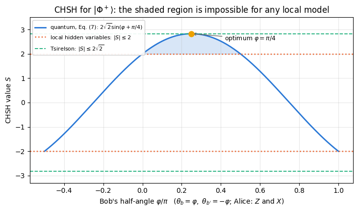
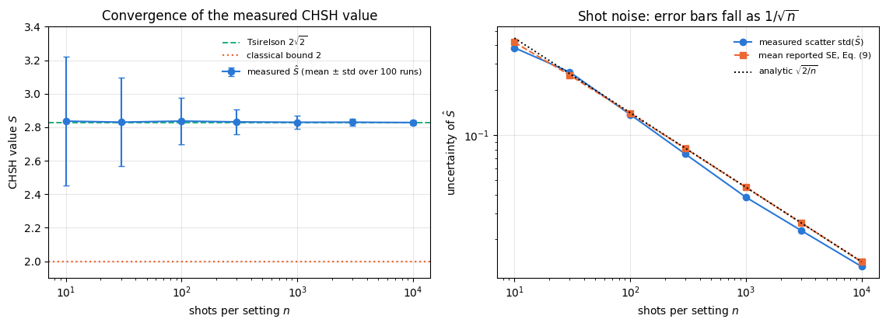
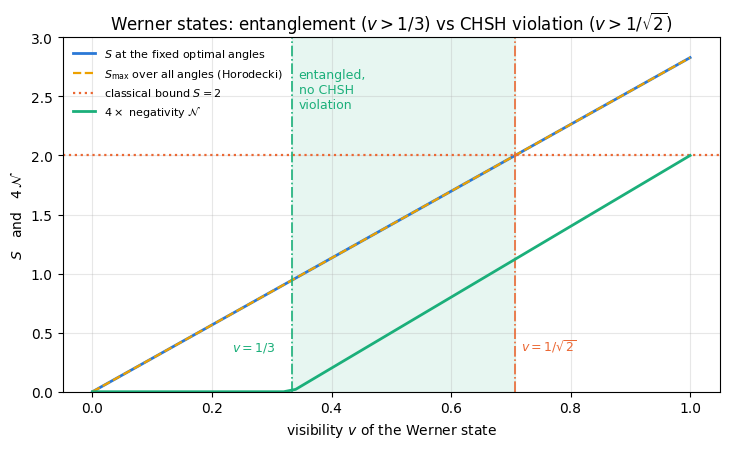
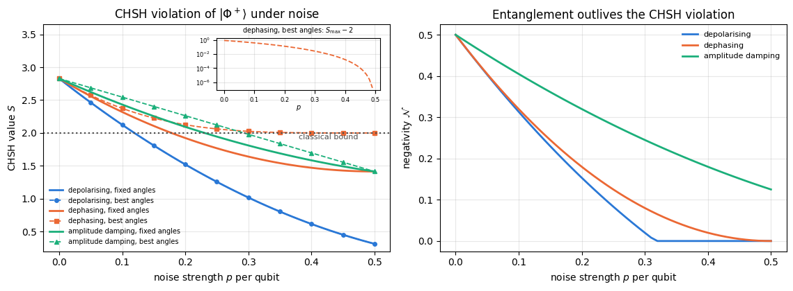

Quantum Many-Body Simulation — Chapter 8 — Quantum information protocols
1. Introduction and motivation
Two experimenters, by tradition called Alice and Bob, work in distant laboratories, and a source between them sends each of them one qubit of every pair it emits. For each pair Alice measures with one of two settings, \(a\) or \(a'\), and records an outcome \(\pm1\); Bob does the same with \(b\) or \(b'\). The correlation\(E(a,b)\) is the average product of their two outcomes: \(+1\) if they always agree, \(-1\) if they always disagree, \(0\) if they are unrelated. For \(\vert\Phi^+\rangle=(\vert00\rangle+\vert11\rangle)/\sqrt2\) the outcomes agree whenever both measure \(Z\) and also whenever both measure \(X\). Two classical coins prepared to show the same face can agree in one such test but not in two incompatible bases at once; this double agreement is the signature of entanglement, a two-qubit state that is not a product of one state for each qubit. Can a set of instructions written into each particle at the source reproduce such correlations?
In 1935 Einstein, Podolsky and Rosen used a state of this kind to argue that quantum mechanics cannot be a complete description of reality: measuring one particle instantly tells you the outcome of a measurement on the other, however far away it is. Either the distant particle “already had” the value — in which case quantum mechanics, which does not list that value, is incomplete — or measuring one particle somehow acts on the other, which Einstein later called “spooky action at a distance”. For nearly thirty years the debate was philosophical.
In 1964 John Bell turned the philosophy into an experimentally testable inequality. If the outcomes are fixed in advance by some hidden variable \(\lambda\) carried by the particles (the instructions above), and if what happens at Alice’s detector does not depend on the setting at Bob’s, then a certain combination of measured correlations is bounded by a number. Quantum mechanics predicts a larger number. The question is thereby moved from interpretation to the laboratory: the apparatus is built, the clicks are counted, and the measured combination either respects the bound or exceeds it. The form of the inequality used in every real experiment since is the one written down by Clauser, Horne, Shimony and Holt (CHSH) in 1969:
Quantum mechanics allows \(\vert S\vert\) up to \(2\sqrt2\approx2.828\) (Tsirelson’s bound) and no larger value. Experiments — Aspect and co-workers in the early 1980s, and the loophole-free experiments of 2015 — measure a violation. The 2022 Nobel Prize in Physics went to Aspect, Clauser and Zeilinger for this line of work. Today the same inequality is a tool: a CHSH violation certifies that a device really produces entanglement, and it is the security foundation of device-independent quantum key distribution, in which two parties establish a secret key without trusting the inner workings of their devices (53 — quantum key distribution).
What we will do. Everything, from the state to the measured number and its error bar.
The states. Define the four Bell states, build them with one Hadamard and one CNOT, and measure their correlations \(\langle ZZ\rangle,\langle XX\rangle,\langle YY\rangle\) and their one-qubit reduced states, which are maximally mixed: each qubit on its own is a fair coin (Sections 3–4).
The classical bound. Write down what a local hidden-variable model is, prove \(\vert S\vert\le2\) in three lines, and check the proof by brute force over all deterministic strategies (Section 5).
The quantum prediction. Derive \(E(a,b)=\cos(\theta_a-\theta_b)\) for \(\vert\Phi^+\rangle\) from the correlators of Section 4, prove Tsirelson’s bound from the operator identity \(S^2=4-[A,A']\otimes[B,B']\), and find the optimal angles geometrically (Sections 6–8).
The experiment. Simulate it shot by shot: rotate into the measurement basis, draw single outcomes from the Born rule, vmap over the four settings and over shots, and watch \(\hat S\) converge to \(2\sqrt2\) with a \(1/\sqrt{n}\) error bar. Compute how many shots are needed to exceed the classical bound by five standard errors, and check that number by Monte Carlo (Sections 9–10).
Noise and loopholes. Werner states (a Bell pair mixed with white noise), depolarising and dephasing noise, and the difference between the entanglement threshold and the nonlocality threshold (CHSH violation): there are states that are provably entangled and provably local. Then the detection loophole: we measure how far the detection efficiency can fall before a maximally entangled pair stops violating CHSH at all (Sections 11–13).
What you will learn
Physics
what a local hidden-variable model is, and which assumptions enter the bound that quantum mechanics violates;
why the four Bell states form a basis, why their marginals are maximally mixed, and how that “randomness” carries the correlation;
Tsirelson’s bound as a consequence of the commutator algebra of \(\pm1\)-valued observables;
that entanglement and Bell nonlocality are different resources: the Werner thresholds \(1/3\) (entanglement) and \(1/\sqrt2\) (CHSH violation);
why the critical visibility for the CHSH violation depends on whether the measurement angles are re-optimised.
Numerical methods
estimating a correlator from finite samples: variance \(1-E^2\), standard error \(1/\sqrt{n}\), error propagation into \(S\);
sample-size planning: the number of shots for a \(5\sigma\) result, and the difference between an expected\(5\sigma\) and a \(5\sigma\) result in every repetition;
maximising a bilinear form over unit vectors (the Horodecki criterion) instead of running a blind four-parameter search.
Implementation practice
measuring a rotated observable as rotate -> measure Z, with apply_gate on state vectors and apply_gate_dm on density tensors;
jax.vmap over measurement settings, over shots and over whole repeated experiments; explicit jax.random key splitting;
no Python if on random data: detector losses and outcome assignment via jnp.where;
a validation ladder — exact correlator vs sampled correlator, operator identity, analytic error bars vs measured scatter.
Conventions. Qubit \(q\) = tensor axis \(q\); \(\vert0\rangle\) is the \(+1\) eigenstate of \(Z\); a measurement result \(s_q\in\{0,1\}\) means the eigenvalue \((-1)^{s_q}\); qubit 0 is the most significant bit of the flat index. Alice always holds qubit 0, Bob qubit 1.
Configuration
Every notebook of this course starts with the same cell. Choose where to run (DEVICE) and the floating-point precision (PRECISION): "double" = float64/complex128 (default, recommended for physics), "single" = float32/complex64 (half the memory, faster on consumer GPUs, but watch the round-off). All code below derives its dtypes from RDTYPE/CDTYPE and its check tolerances from TOL, so nothing else needs to change.
Code
# ==============================================================================# CONFIGURATION -- adapt to your hardware, then run the notebook top to bottom# ==============================================================================DEVICE ="auto"# "auto": use a GPU if JAX finds one, else CPU | "cpu" | "gpu"PRECISION ="double"# "double": float64/complex128 | "single": float32/complex64import osif DEVICE =="cpu": os.environ["JAX_PLATFORMS"] ="cpu"# must be set BEFORE jax is importedimport stringfrom functools import partialimport mathimport numpy as npimport jaximport jax.numpy as jnpfrom jax import lax# Precision is configurable: "double" = float64/complex128 (default; needed for long time evolutions and# tight validation), "single" = float32/complex64 (half the memory, faster on consumer GPUs).# In a notebook PRECISION is defined in the Configuration cell; for this module use the env var QE_PRECISION.PRECISION =globals().get("PRECISION", os.environ.get("QE_PRECISION", "double"))jax.config.update("jax_enable_x64", PRECISION =="double")RDTYPE = jnp.float64 if PRECISION =="double"else jnp.float32 # real dtypeCDTYPE = jnp.complex128 if PRECISION =="double"else jnp.complex64 # complex dtype of all states/operatorsTOL =1e-10if PRECISION =="double"else1e-4# tolerance for sanity checks (asserts)_LETTERS = string.ascii_letters # the 52 einsum index labels a-z, A-Zimport timeimport matplotlib.pyplot as pltif DEVICE =="gpu"and jax.default_backend() =="cpu":print("WARNING: DEVICE='gpu' requested but JAX found no GPU -- running on CPU.")print(f"JAX {jax.__version__} | backend: {jax.default_backend()} | devices: {jax.devices()}")print(f"precision: {PRECISION} -> real {RDTYPE.__name__}, complex {CDTYPE.__name__}, check tolerance TOL={TOL:g}")
JAX 0.11.0 | backend: cpu | devices: [CpuDevice(id=0)]
precision: double -> real float64, complex complex128, check tolerance TOL=1e-10
2. Engine recap and helpers
We need very little: the gates \(H\), CNOT and \(R_y\), the einsum that applies them (apply_gate for state vectors, apply_gate_dm for density tensors), reduced density matrices, Pauli expectation values, the Kraus channels, and the negativity. Everything specific to CHSH is built from scratch below.
Engine recap — the simulator primitives used in this notebook (click to expand)
# ==============================================================================# ENGINE RECAP: the functions of quantum_engine.py (SmoQ.jax) used in this notebook.# Each one is derived, with its mathematics and an independent check, in notebook 08b# (Chapter 3), 'Building the quantum simulator engine'.# States are rank-N tensors of shape (2,)*N; every operator acts through ONE einsum.# ==============================================================================# ----------------------------------------------------------------------------# 1. Elementary matrices: Paulis, Clifford generators, rotations# ----------------------------------------------------------------------------I2 = jnp.eye(2, dtype=CDTYPE)X = jnp.array([[0, 1], [1, 0]], dtype=CDTYPE)Y = jnp.array([[0, -1j], [1j, 0]], dtype=CDTYPE)Z = jnp.array([[1, 0], [0, -1]], dtype=CDTYPE)H = jnp.array([[1, 1], [1, -1]], dtype=CDTYPE) / jnp.sqrt(2.0) # Hadamard: Z-basis <-> X-basisPAULI = {"I": I2, "X": X, "Y": Y, "Z": Z}CNOT = jnp.array([[1, 0, 0, 0], [0, 1, 0, 0], [0, 0, 0, 1], [0, 0, 1, 0]], dtype=CDTYPE)def ry(theta):"""Rotation about y: Ry(theta) = exp(-i theta Y/2) = [[cos, -sin], [sin, cos]](theta/2) (real matrix).""" c, s = jnp.cos(theta /2), jnp.sin(theta /2)return jnp.array([[c, -s], [s, c]], dtype=CDTYPE)# ----------------------------------------------------------------------------# 2. THE core primitive: a k-qubit operator acting on a tensor through ONE einsum# ----------------------------------------------------------------------------def apply_gate(psi, U, qubits):"""Apply a k-qubit operator U to the axes `qubits` of the tensor `psi`. MATH ---- One qubit (k=1), target q: psi'[s_0,..,a,..,s_{N-1}] = sum_b U[a,b] psi[s_0,..,b,..,s_{N-1}] Two qubits (k=2), targets (q1,q2); the 4x4 matrix is reshaped to U[a1,a2,b1,b2]: psi'[.., a1, .., a2, ..] = sum_{b1,b2} U[a1,a2,b1,b2] psi[.., b1, .., b2, ..] This IS the action of (1 x .. x U x .. x 1) -- written without ever building it. EINSUM TRANSLATION (generated automatically below) ------------------ N=3, q=1 : "db,abc->adc" d = new (output) index of qubit 1 N=4, q=(1,3) : "efbd,abcd->aecf" e,f = new indices of qubits 1 and 3 Recipe: label the axes of psi with letters a,b,c,...; give every target qubit a NEW letter (the next unused ones); U carries (new letters)+(old letters of the targets); the output is psi's labels with the target letters replaced by the new ones. IMPLEMENTATION NOTES -------------------- * reshape of U: (2^k,2^k) -> (2,)*2k. Row index = (a1..ak), column = (b1..bk), and the FIRST qubit in `qubits` is the most significant bit of the small matrix, i.e. it corresponds to the LEFT factor of kron(A,B). * `qubits` may be any distinct axes in any order: non-neighbouring gates cost the same. * U need not be unitary: projectors, Kraus operators and Hamiltonian terms reuse this. * psi may be ANY tensor with those axes of size 2: a state (rank N), a density tensor (rank 2N: ket axes 0..N-1, bra axes N..2N-1), ... COST O(2^k * 2^N) operations, O(2^N) memory (dense matrix: O(4^N) both). JAX `qubits` must be static Python ints (they define the einsum string); psi and U are traced, so the function can sit inside jit / grad / vmap / scan. """ qubits =tuple(int(q) for q in qubits) k, n =len(qubits), psi.ndim U = jnp.asarray(U, dtype=psi.dtype).reshape((2,) * (2* k)) # matrix -> rank-2k tensor inp =list(_LETTERS[:n]) # labels of psi's axes new = _LETTERS[n:n + k] # fresh labels for the outputs out = inp.copy()for a, q inzip(new, qubits): out[q] = a # target axes get the new labels sub =f"{''.join(new)}{''.join(inp[q] for q in qubits)},{''.join(inp)}->{''.join(out)}"return jnp.einsum(sub, U, psi)def apply_gate_dm(rho, U, qubits):"""Unitary on a density tensor: rho -> U rho U^dagger. MATH rho'[a..;a'..] = sum_{b,b'} U[a,b] rho[b..;b'..] U^*[a',b'] i.e. U acts on the KET axis q and the complex conjugate U^* on the BRA axis N+q. (A density matrix is "a state vector of 2N qubits": vectorisation |rho>> and U (x) U^* acting on it.) IMPLEMENTATION two calls of `apply_gate` -- the same einsum machinery, no new code. COST O(2^k 4^N). """ N = rho.ndim //2 rho = apply_gate(rho, U, qubits) # U on ket axesreturn apply_gate(rho, jnp.conj(jnp.asarray(U)), [N + q for q in qubits]) # U^* on bra axesdef apply_kraus_dm(rho, kraus, qubits):"""Quantum channel in Kraus form: rho -> sum_m K_m rho K_m^dagger, sum_m K_m^dag K_m = 1. EINSUM TRANSLATION (N=2, channel on qubit 0; g = Kraus index, summed!) "gea,gfc,abcd->ebfd" with operands K, K^*, rho [a=ket0, b=ket1, c=bra0, d=bra1; e, f = new ket0, bra0] All Kraus branches are summed INSIDE one einsum -- no Python loop over m. `kraus` has shape (M, 2^k, 2^k). """ qubits =tuple(int(q) for q in qubits) k, N =len(qubits), rho.ndim //2 K = jnp.asarray(kraus, dtype=rho.dtype).reshape((-1,) + (2,) * (2* k)) n = rho.ndim inp =list(_LETTERS[:n]) new_k, new_b, m = _LETTERS[n:n + k], _LETTERS[n + k:n +2* k], _LETTERS[n +2* k] out = inp.copy()for a, b, q inzip(new_k, new_b, qubits): out[q], out[N + q] = a, b ket_old ="".join(inp[q] for q in qubits) bra_old ="".join(inp[N + q] for q in qubits) sub =f"{m}{new_k}{ket_old},{m}{new_b}{bra_old},{''.join(inp)}->{''.join(out)}"return jnp.einsum(sub, K, jnp.conj(K), rho)# ----------------------------------------------------------------------------# 3. State preparation# ----------------------------------------------------------------------------def basis_state(bits):"""Computational basis state |b_0 b_1 ... b_{N-1}> from a list of bits.""" bits =tuple(int(b) for b in bits)return jnp.zeros((2,) *len(bits), dtype=CDTYPE).at[bits].set(1.0)def bell_state(kind="phi+"):"""The four Bell states as (2,2) tensors: phi+- = (|00> +- |11>)/sqrt2, psi+- = (|01> +- |10>)/sqrt2.""" a =1/ np.sqrt(2) v = {"phi+": [a, 0, 0, a], "phi-": [a, 0, 0, -a], "psi+": [0, a, a, 0], "psi-": [0, a, -a, 0]}[kind]return jnp.array(v, dtype=CDTYPE).reshape(2, 2)def to_dm(psi):"""Pure state -> density TENSOR rho[s..; s'..] = psi[s..] psi^*[s'..] (rank 2N). An outer product: einsum "ab,AB->abAB" -- here via the equivalent tensordot(axes=0)."""return jnp.tensordot(psi, jnp.conj(psi), axes=0)def dm_matrix(rho):"""View a rank-2N density tensor as an ordinary 2^N x 2^N matrix (a reshape, no copy of meaning).""" d =int(round(np.sqrt(rho.size)))return rho.reshape(d, d)# ----------------------------------------------------------------------------# 4. Reduced density matrices & observables (matrix-free)# ----------------------------------------------------------------------------def rdm(psi, keep):"""Reduced density matrix of the qubits `keep` from a PURE state: rho_A = Tr_B |psi><psi|. MATH rho_A[a, a'] = sum_{b} psi[a, b] psi^*[a', b] (a: indices of A, b: of the rest B) EINSUM TRANSLATION N=3, keep=(0,): "abc,Abc->aA" with operands psi, psi^* * letters of B (b,c) appear in BOTH operands and not in the output -> summed = traced out * the kept axis gets a different letter in the second operand -> stays open (a and A) The full |psi><psi| (4^N numbers) is never formed; cost O(2^N 2^|A|). Returns a (2^|A|, 2^|A|) matrix with row/column order following `keep`. """ keep =tuple(int(q) for q in keep) n, k = psi.ndim, len(keep) a =list(_LETTERS[:n]) b = a.copy()for new, q inzip(_LETTERS[n:n + k], keep): b[q] = new sub =f"{''.join(a)},{''.join(b)}->{''.join(a[q] for q in keep)}{''.join(b[q] for q in keep)}"return jnp.einsum(sub, psi, jnp.conj(psi)).reshape(2** k, 2** k)def apply_pauli_string(psi, ops):"""Apply a Pauli string P = P_0 x P_1 x ... to psi. `ops` is a dict {qubit: 'X'|'Y'|'Z'} or a string like 'XIZY' (one letter per qubit; 'I' skipped). N single-qubit einsums -- cost O(N 2^N) -- instead of one 2^N x 2^N matrix."""ifisinstance(ops, str): ops = {q: p for q, p inenumerate(ops) if p !="I"}for q, p in ops.items(): psi = apply_gate(psi, PAULI[p], [q])return psidef expect_pauli_string(psi, ops):"""<psi|P|psi> = <psi | (P psi)> : apply the string, then ONE inner product (jnp.vdot conjugates its first argument). Works for strings of any weight, e.g. the N-body correlator <X X ... X>."""return jnp.real(jnp.vdot(psi, apply_pauli_string(psi, ops)))def expect_pauli_string_dm(rho, ops):"""Tr(P rho): apply P to the KET axes only, then take the full trace."""return jnp.real(jnp.trace(dm_matrix(apply_pauli_string(rho, ops))))# ----------------------------------------------------------------------------# 5. State characteristics: entropies, fidelity, negativity# ----------------------------------------------------------------------------def purity(rho_mat):"""Tr(rho^2): 1 for pure states, 1/d for the maximally mixed state in dimension d."""return jnp.real(jnp.trace(rho_mat @ rho_mat))def von_neumann_entropy(rho_mat, base=2.0):"""S(rho) = -Tr(rho log rho) = -sum_i lambda_i log lambda_i (in bits for base=2). Eigenvalues are clipped at 1e-16 because 0*log(0) := 0 but log(0) = -inf numerically.""" lam = jnp.clip(jnp.linalg.eigvalsh(rho_mat), 1e-16, None)return-jnp.sum(lam * jnp.log(lam)) / jnp.log(base)def schmidt_values(psi, subsystem):"""Schmidt coefficients of the bipartition A|B with A = `subsystem`. MATH Group the tensor axes into a matrix M[(a),(b)] = psi[a,b] of shape (2^|A|, 2^|B|). Its SVD M = U diag(lambda) V^dag IS the Schmidt decomposition |psi> = sum_k lambda_k |u_k>_A |v_k>_B , rho_A has eigenvalues lambda_k^2. IMPLEMENTATION transpose (A axes first) -> reshape -> svd. No density matrix needed. """ A =tuple(int(q) for q in subsystem) B =tuple(q for q inrange(psi.ndim) if q notin A) M = jnp.transpose(psi, A + B).reshape(2**len(A), -1)return jnp.linalg.svd(M, compute_uv=False)def entanglement_entropy(psi, subsystem, base=2.0):"""Entanglement entropy S_A = -sum_k p_k log p_k with p_k = lambda_k^2 (squared Schmidt values). Product state: 0. Bell/GHZ across any cut: 1 bit. Random state: ~ |A| - 1/(2 ln2) 2^{|A|-|B|} (Page).""" p = jnp.clip(schmidt_values(psi, subsystem) **2, 1e-16, None)return-jnp.sum(p * jnp.log(p)) / jnp.log(base)def as_dm_tensor(rho):"""Accept a density matrix in EITHER form and return the rank-2N tensor (2,)*2N. Both conventions are in use: `rdm` and `dm_matrix` return a (2^N, 2^N) MATRIX, while `to_dm` and the channel functions work with the rank-2N TENSOR (N ket axes, then N bra axes). A (2^N, 2^N) matrix with N > 1 is unambiguous, because a density tensor has every axis of length 2. Passing the matrix form straight to `partial_transpose` used to transpose the WHOLE matrix, which leaves the eigenvalues alone and silently reports zero negativity -- hence this conversion. """ rho = jnp.asarray(rho)if rho.ndim ==2and rho.shape[0] >2: # (2^N, 2^N) matrix with N > 1 d = rho.shape[0] N =int(round(math.log2(d)))if2** N != d:raiseValueError(f"density matrix of dimension {d} is not a power of two")return rho.reshape((2,) * (2* N))ifany(s !=2for s in rho.shape) or rho.ndim %2:raiseValueError(f"not a density matrix or density tensor: shape {rho.shape}")return rhodef partial_transpose(rho, qubits):"""Partial transpose on subsystem A = `qubits`, for a density tensor OR a (2^N, 2^N) matrix. In tensor form it is trivial: SWAP the ket axis q with the bra axis N+q for q in A. (With a 2^N x 2^N matrix this requires painful index gymnastics -- here: one `transpose`.) RETURNS the rank-2N tensor; wrap in `dm_matrix` for the matrix form.""" rho = as_dm_tensor(rho) N = rho.ndim //2 perm =list(range(2* N))for q in qubits: perm[q], perm[N + q] = perm[N + q], perm[q]return jnp.transpose(rho, perm)def negativity(rho, qubits):"""Entanglement negativity (Peres-Horodecki / PPT criterion). N(rho) = (||rho^{T_A}||_1 - 1)/2 = sum of |negative eigenvalues| of the partial transpose, E_N = log2 ||rho^{T_A}||_1 = log2(2N+1) (logarithmic negativity). N > 0 => entangled (for 2x2 and 2x3 systems also <=). Returns (N, E_N).""" lam = jnp.linalg.eigvalsh(dm_matrix(partial_transpose(rho, qubits))) neg = jnp.sum(jnp.abs(lam) - lam) /2return neg, jnp.log2(2* neg +1)# ----------------------------------------------------------------------------# 7. Noise channels (Kraus operators): density matrix and quantum-trajectory forms# ----------------------------------------------------------------------------def kraus_depolarizing(p):"""Depolarising channel rho -> (1-p) rho + (p/3)(X rho X + Y rho Y + Z rho Z). Kraus: sqrt(1-p) 1, sqrt(p/3) X, sqrt(p/3) Y, sqrt(p/3) Z. Bloch vector shrinks by 1 - 4p/3."""return jnp.stack([jnp.sqrt(1- p) * I2, jnp.sqrt(p /3) * X, jnp.sqrt(p /3) * Y, jnp.sqrt(p /3) * Z])def kraus_dephasing(p):"""Dephasing (phase-flip) channel rho -> (1-p) rho + p Z rho Z : coherences rho_01 -> (1-2p) rho_01."""return jnp.stack([jnp.sqrt(1- p) * I2, jnp.sqrt(p) * Z])def kraus_amplitude_damping(g):"""Amplitude damping (T1 decay |1> -> |0> with probability g): K0 = [[1,0],[0,sqrt(1-g)]] (no decay -- but the amplitude of |1> shrinks: 'no click' is information) K1 = [[0,sqrt(g)],[0,0]] (decay event = sqrt(g) |0><1| = sqrt(g) sigma^+, engine SP).""" K0 = jnp.array([[1, 0], [0, jnp.sqrt(1- g)]], dtype=CDTYPE) K1 = jnp.array([[0, jnp.sqrt(g)], [0, 0]], dtype=CDTYPE)return jnp.stack([K0, K1])
Code
# ==============================================================================# PLOT STYLE + small helpers used throughout this notebook# ==============================================================================import itertoolsPALETTE = ["#2a78d6", "#eb6834", "#1baf7a", "#eda100", "#e87ba4", "#4a3aa7"] # colour-blind-friendly, fixed orderMARKERS = ["o", "s", "^", "D", "v", "P"]plt.rcParams.update({"axes.prop_cycle": plt.cycler(color=PALETTE), "axes.grid": True,"grid.alpha": 0.3, "font.size": 10, "legend.frameon": False})BASIS_KETS = ["00", "01", "10", "11"] # flat index 2*s0 + s1, qubit 0 = most significant bitdef amplitude_table(psi, label):"""Print the four amplitudes of a 2-qubit state tensor as a small table (real and imaginary part).""" v = np.asarray(psi).reshape(-1)print(f" {label}")for k, ket inenumerate(BASIS_KETS):print(f" |{ket}> : {v[k].real:+.4f}{v[k].imag:+.4f}i")def max_abs(a):"""Largest absolute entry of an array, as a Python float."""returnfloat(jnp.max(jnp.abs(jnp.asarray(a))))
3. The four Bell states and the circuit that makes them
3.1 Definition
Two qubits live in a four-dimensional Hilbert space. The computational basis is \(\{\vert00\rangle,\vert01\rangle,\vert10\rangle,\vert11\rangle\}\); every state in it is a product state, Alice’s qubit and Bob’s qubit each have a definite value. The Bell basis is a different orthonormal basis of the same space:
Orthonormality is immediate: each state is a normalised sum of two basis kets, and any two of them either use disjoint basis kets (\(\Phi\) versus \(\Psi\)) or differ by a sign (\(+\) versus \(-\)), which makes the overlap \(\tfrac12-\tfrac12=0\). Four orthonormal vectors in a four-dimensional space form a basis, so any two-qubit state can be expanded in the Bell basis. We will use that fact constantly, here and in the teleportation notebook.
All four are maximally entangled: we prove below that tracing out either qubit leaves the maximally mixed state \(\mathbb 1/2\). \(\vert\Psi^-\rangle\) is the singlet, the only one that is invariant (up to a phase) under \(U\otimes U\) for every single-qubit unitary \(U\).
3.2 The preparation circuit
One Hadamard and one CNOT are enough. Start from a computational basis state \(\vert b_0 b_1\rangle\) and apply
because CNOT flips qubit 1 exactly when qubit 0 is \(\vert1\rangle\). The intermediate state is still a product, \(\left(\tfrac{1}{\sqrt2}(\vert0\rangle+\vert1\rangle)\right)\otimes\vert0\rangle\); the entanglement is created by the CNOT, and the Hadamard only prepares the superposition on which the CNOT acts. Repeating the same two lines for the other three inputs gives
input
output
\(\vert00\rangle\)
\(\vert\Phi^{+}\rangle\)
\(\vert01\rangle\)
\(\vert\Psi^{+}\rangle\)
\(\vert10\rangle\)
\(\vert\Phi^{-}\rangle\)
\(\vert11\rangle\)
\(\vert\Psi^{-}\rangle\)
so the circuit is a unitary map from the computational basis onto the Bell basis. Run backwards (\(H_0\) after \(\text{CNOT}_{0\to1}\)) it is a Bell measurement: it rotates the Bell basis onto the computational basis, where an ordinary detector can read it out. Teleportation (next notebook) uses this Bell measurement.
3.3 Code
In tensor language a two-qubit state is an array of shape \((2,2)\); apply_gate(psi, H, [0]) is the einsum "Aa,ab->Ab" and apply_gate(psi, CNOT, [0,1]) is "ABab,ab->AB" with the \(4\times4\) CNOT matrix reshaped to \((2,2,2,2)\). No \(4\times4\) state vector is ever formed by hand.
Code
# ==============================================================================# STEP 1: the Bell-state preparation circuit, with gate-by-gate state tracking# ==============================================================================BELL_NAMES = ["Phi+", "Psi+", "Phi-", "Psi-"] # ordered by the input bits (b0,b1) = 00, 01, 10, 11BELL_KEYS = ["phi+", "psi+", "phi-", "psi-"] # the engine's `bell_state` labels, same orderdef bell_circuit(b0, b1):"""Prepare a Bell state from the computational basis state |b0 b1>. MATH |B(b0,b1)> = CNOT_{0->1} (H_0 (x) 1) |b0 b1> ; the four inputs give the four Bell states. JAX b0, b1 are static Python ints (they choose the initial tensor entry); the gates are traced arrays. """ psi = basis_state([b0, b1]) psi = apply_gate(psi, H, [0]) # superpose qubit 0return apply_gate(psi, CNOT, [0, 1]) # entangle: qubit 1 copies qubit 0 in the Z basis# --- gate-by-gate walk through the |00> -> |Phi+> case -------------------------------------------------print("GATE-BY-GATE PREPARATION OF |Phi+>")psi = basis_state([0, 0])amplitude_table(psi, "step 0: |00> (product, both qubits definite)")psi = apply_gate(psi, H, [0])amplitude_table(psi, "step 1: H on qubit 0 (product, qubit 0 in a superposition)")print(f" entanglement entropy of the cut 0|1 : {float(entanglement_entropy(psi, [0])):.6f} bit")psi = apply_gate(psi, CNOT, [0, 1])amplitude_table(psi, "step 2: CNOT(0 -> 1) (entangled: |Phi+>)")print(f" entanglement entropy of the cut 0|1 : {float(entanglement_entropy(psi, [0])):.6f} bit")# --- CHECKPOINT: the circuit reproduces the engine's four Bell states ----------------------------------print("\nCHECKPOINT circuit output vs the engine's `bell_state`")for (b0, b1), name, key inzip([(0, 0), (0, 1), (1, 0), (1, 1)], BELL_NAMES, BELL_KEYS): err = max_abs(bell_circuit(b0, b1) - bell_state(key))print(f" |{b0}{b1}> -> |{name:4s}> max|difference| = {err:.2e}")assert err < TOL
GATE-BY-GATE PREPARATION OF |Phi+>
step 0: |00> (product, both qubits definite)
|00> : +1.0000 +0.0000i
|01> : +0.0000 +0.0000i
|10> : +0.0000 +0.0000i
|11> : +0.0000 +0.0000i
step 1: H on qubit 0 (product, qubit 0 in a superposition)
|00> : +0.7071 +0.0000i
|01> : +0.0000 +0.0000i
|10> : +0.7071 +0.0000i
|11> : +0.0000 +0.0000i
entanglement entropy of the cut 0|1 : 0.000000 bit
step 2: CNOT(0 -> 1) (entangled: |Phi+>)
|00> : +0.7071 +0.0000i
|01> : +0.0000 +0.0000i
|10> : +0.0000 +0.0000i
|11> : +0.7071 +0.0000i
entanglement entropy of the cut 0|1 : 1.000000 bit
CHECKPOINT circuit output vs the engine's `bell_state`
|00> -> |Phi+> max|difference| = 0.00e+00
|01> -> |Psi+> max|difference| = 0.00e+00
|10> -> |Phi-> max|difference| = 0.00e+00
|11> -> |Psi-> max|difference| = 0.00e+00
The first Hadamard leaves the state a product — the entanglement entropy of the cut is exactly \(0\) — and the CNOT raises it to exactly \(1\) bit, the maximum for one qubit. Reading the amplitude tables: after step 1 the state has weight on \(\vert00\rangle\) and \(\vert10\rangle\) (qubit 1 is still \(\vert0\rangle\), whatever qubit 0 does), and the CNOT moves the second amplitude from \(\vert10\rangle\) to \(\vert11\rangle\). The four preparations match the engine’s Bell states to machine precision.
4. Correlations and marginals of the Bell states
4.1 The correlators
For a two-qubit state the object that matters for everything below is the \(3\times3\)correlation matrix
together with the two local Bloch vectors \(a_i=\langle\sigma_i\otimes\mathbb 1\rangle\), \(b_j=\langle\mathbb 1\otimes\sigma_j\rangle\). Together with the identity these \(3+3+9=15\) numbers are exactly the parameters of a two-qubit density matrix.
Compute \(T\) for \(\vert\Phi^+\rangle\) by hand. Using \(Z\vert0\rangle=\vert0\rangle\), \(Z\vert1\rangle=-\vert1\rangle\):
With \(X\vert0\rangle=\vert1\rangle\), \(X\vert1\rangle=\vert0\rangle\) we get \(X\otimes X\vert\Phi^+\rangle= \tfrac{1}{\sqrt2}(\vert11\rangle+\vert00\rangle)=\vert\Phi^+\rangle\), so \(\langle XX\rangle=+1\) as well; and with \(Y\vert0\rangle=i\vert1\rangle\), \(Y\vert1\rangle=-i\vert0\rangle\), \(Y\otimes Y\vert\Phi^+\rangle= \tfrac{1}{\sqrt2}(i\cdot i\,\vert11\rangle+(-i)(-i)\vert00\rangle)=-\vert\Phi^+\rangle\), so \(\langle YY\rangle=-1\). Every off-diagonal entry vanishes, e.g. \(Z\otimes X\vert\Phi^+\rangle=\tfrac{1}{\sqrt2}(\vert01\rangle-\vert10\rangle)\), which is orthogonal to \(\vert\Phi^+\rangle\). So
These two entries already pose the puzzle.\(\langle ZZ\rangle=+1\) says: measure both qubits along \(z\) and the results always agree. \(\langle XX\rangle=+1\) says: measure both along \(x\) and the results also always agree. A classical object carrying instructions would have to carry a definite \(z\)-value and a definite \(x\)-value for each particle; Sections 5–8 show that no such list of instructions reproduces the correlations at intermediate angles.
4.2 The marginals
The reduced state of qubit 0 is obtained by tracing out qubit 1:
because the cross terms \(\vert0\rangle\langle1\vert\,\mathrm{Tr}\!\left(\vert0\rangle\langle1\vert\right)\) vanish. The local Bloch vector is zero: each qubit on its own is completely random, every local measurement gives \(\pm1\) with probability \(1/2\) whatever axis you choose. All the information sits in the correlations. That combination — perfectly random locally, perfectly correlated jointly — is the definition of maximal entanglement for a pure state. Alice’s local statistics are also unchanged by anything Bob does on his qubit; this no-signalling property holds for every two-party state, because Bob’s local operations leave Alice’s reduced density matrix unchanged.
Code
# ==============================================================================# STEP 2: correlation matrix, marginals and entropies of the four Bell states# ==============================================================================PAULI_AXES ="XYZ"def correlation_matrix(psi):"""T[i,j] = <sigma_i (x) sigma_j> for a 2-qubit PURE state, matrix-free. MATH T_ij = <psi| P_i (x) P_j |psi> ; `expect_pauli_string` applies the two 2x2 matrices with two einsums and takes one inner product -- the 4x4 operator is never built. """return jnp.array([[expect_pauli_string(psi, p + q) for q in PAULI_AXES] for p in PAULI_AXES])def local_bloch(psi, q):"""Bloch vector (<X>,<Y>,<Z>) of qubit q from its 2x2 reduced density matrix.""" r = rdm(psi, [q])return jnp.array([jnp.real(jnp.trace(r @ P)) for P in (X, Y, Z)])SIGN_PATTERN = {"Phi+": (+1, -1, +1), "Psi+": (+1, +1, -1), # predicted (<XX>,<YY>,<ZZ>) from the stabilisers"Phi-": (-1, +1, +1), "Psi-": (-1, -1, -1)}print(f"{'state':6s} | {'<XX>':>6s}{'<YY>':>6s}{'<ZZ>':>6s} | {'|Bloch_0|':>9s}{'|Bloch_1|':>9s} "f"| {'Tr(rho_0^2)':>11s}{'S(rho_0) [bit]':>14s}")for name, key inzip(BELL_NAMES, BELL_KEYS): psi = bell_state(key) T = correlation_matrix(psi) r0 = rdm(psi, [0]) n0, n1 =float(jnp.linalg.norm(local_bloch(psi, 0))), float(jnp.linalg.norm(local_bloch(psi, 1)))print(f"{name:6s} | {float(T[0, 0]):+6.3f}{float(T[1, 1]):+6.3f}{float(T[2, 2]):+6.3f} | "f"{n0:9.2e}{n1:9.2e} | {float(purity(r0)):11.6f}{float(von_neumann_entropy(r0)):14.6f}")# --- CHECKPOINT: off-diagonal correlators vanish, marginal is exactly 1/2 * identity ---------------# The diagonal SIGNS are checked too (a sign slip in a Pauli or a swapped axis would leave T diagonal# but change the pattern), together with the stabiliser rule <XX><YY><ZZ> = -1.assert max_abs(T - jnp.diag(jnp.diag(T))) < TOL diag = jnp.real(jnp.diag(T))assert max_abs(diag - jnp.array(SIGN_PATTERN[name], dtype=RDTYPE)) < TOLassertabs(float(diag[0] * diag[1] * diag[2]) +1.0) < TOLassert max_abs(r0 - I2 /2) < TOL and max_abs(rdm(psi, [1]) - I2 /2) < TOLprint("\nCHECKPOINT all four correlation matrices are diagonal with the predicted signs and product -1;")print(" both marginals equal 1/2 * identity (max error < TOL)")print("Bell basis orthonormality <B_i|B_j> = delta_ij :")G = jnp.array([[jnp.vdot(bell_state(a).reshape(-1), bell_state(b).reshape(-1)) for b in BELL_KEYS] for a in BELL_KEYS])print(f" max|Gram - identity| = {max_abs(G - jnp.eye(4)):.2e}")assert max_abs(G - jnp.eye(4)) < TOL
Psi+ | +1.000 +1.000 -1.000 | 0.00e+00 0.00e+00 | 0.500000 1.000000
Phi- | -1.000 +1.000 +1.000 | 0.00e+00 0.00e+00 | 0.500000 1.000000
Psi- | -1.000 -1.000 -1.000 | 0.00e+00 0.00e+00 | 0.500000 1.000000
CHECKPOINT all four correlation matrices are diagonal with the predicted signs and product -1;
both marginals equal 1/2 * identity (max error < TOL)
Bell basis orthonormality <B_i|B_j> = delta_ij :
max|Gram - identity| = 2.22e-16
The table confirms the hand calculation and adds the other three states: the signs of \((\langle XX\rangle,\langle YY\rangle, \langle ZZ\rangle)\) are \((+,-,+)\) for \(\Phi^+\), \((+,+,-)\) for \(\Psi^+\), \((-,+,+)\) for \(\Phi^-\) and \((-,-,-)\) for the singlet \(\Psi^-\). Every Bell state has an odd number of minus signs, i.e. the product of the three entries is always \(-1\). The reason is algebraic: the three operators \(X\otimes X\), \(Y\otimes Y\), \(Z\otimes Z\) commute with each other and multiply to \(-\mathbb 1\otimes\mathbb 1\) (use \(XY=iZ\) on each factor, so the phases \(i\cdot i=-1\)), so their four common eigenvectors — the Bell states — can only carry sign patterns whose product is \(-1\). These are the stabilisers of the Bell states, and specifying two of the three signs already identifies the state uniquely.
Every local Bloch vector has length \(0\) to machine precision, every marginal has purity exactly \(1/2\) (the minimum in dimension 2) and entropy exactly \(1\) bit (the maximum). The Gram matrix is the identity, so the four states really are an orthonormal basis.
Physics insight. A Bell state is a state of perfect knowledge about a relation combined with zero knowledge about the parts. Classically that is impossible: if I know that two bits are equal and I know nothing else, I can still list the two possibilities, and each of them assigns definite values. A Bell state cannot be read as such a list, and the next section turns this statement into an inequality that nature can settle.
5. Local hidden variables and the CHSH inequality
5.1 The model we want to rule out
Alice can turn a knob to one of two settings \(a\) or \(a'\) and reads off a result \(\pm1\); Bob likewise chooses \(b\) or \(b'\). A local hidden-variable (LHV) model of the experiment consists of
a hidden variable \(\lambda\) (anything at all: a list of numbers, a function, a whole universe) distributed with some probability density \(\rho(\lambda)\ge0\), \(\int\rho(\lambda)\,d\lambda=1\), produced by the source and shared by the two particles;
two response functions \(A(a,\lambda)\in\{-1,+1\}\) and \(B(b,\lambda)\in\{-1,+1\}\).
Three assumptions are hidden in that notation and they are the entire content of the theorem:
Realism / determinism: the outcome is a function of the setting and of \(\lambda\) — it exists before anyone looks.
Locality: \(A\) does not depend on \(b\), and \(B\) does not depend on \(a\). Alice’s knob cannot influence Bob’s detector.
Measurement independence (also called freedom of choice, or the no-conspiracy assumption): the distribution \(\rho(\lambda)\) of the hidden variable is the same whatever settings the two experimenters choose. The source does not know in advance which knobs will be turned, and the knob choices are not correlated with \(\lambda\).
The measurable correlation predicted by such a model is
Assumption 3 is what allows the same symbol \(\rho(\lambda)\) to appear in all four of the correlators that build \(S\); without it there would be four unrelated densities \(\rho_{ab},\rho_{ab'},\rho_{a'b},\rho_{a'b'}\) and nothing could be proved.
Assumption 1 looks stronger than it is. Suppose instead that the model is stochastic: given \(\lambda\) it only specifies probabilities \(P(A\vert a,\lambda)\) and \(P(B\vert b,\lambda)\), and the two outcomes are conditionally independent, \(P(A,B\vert a,b,\lambda)=P(A\vert a,\lambda)P(B\vert b,\lambda)\) (this conditional factorisation is the precise statement of locality). Then enlarge the hidden variable to \(\tilde\lambda=(\lambda,u_A,u_B)\), where \(u_A,u_B\) are two independent numbers drawn uniformly on \([0,1]\) and shipped with the particles. Alice’s outcome is now the deterministic function “return \(+1\) if \(u_A<P(+1\vert a,\lambda)\), else \(-1\)”, and likewise for Bob; the new model reproduces exactly the same statistics. So every stochastic local model is a deterministic local model with a bigger \(\lambda\), and it suffices to bound the deterministic ones.
5.2 The proof of \(\vert S\vert\le2\)
Fix \(\lambda\) and look at the combination that appears in \(S\), for that single \(\lambda\):
Now use the only property of the outcomes we have: they are \(\pm1\). If \(B(b,\lambda)=B(b',\lambda)\) then the first bracket is \(\pm2\) and the second is \(0\); if they differ, the first is \(0\) and the second is \(\pm2\). In either case exactly one bracket survives and it equals \(\pm2\), so \(s(\lambda)=\pm2\) and in particular \(\vert s(\lambda)\vert=2\) for every \(\lambda\). Averaging,
That is the whole derivation. Nothing was assumed about the physics of the particles, about what \(\lambda\) is, or about the number of settings the experimenters could have chosen. Only the three assumptions above entered, each at one identifiable place. Locality is in writing \(B(b,\lambda)\) with no \(a\) in it, so that the same \(B(b,\lambda)\) appears in the terms \(E(a,b)\) and \(E(a',b)\) and can be factored out of the bracket. Realism is in having a single number \(A(a,\lambda)\in\{-1,+1\}\) to factor out at all. Measurement independence is in writing the four integrals with one common \(\rho(\lambda)\), which is what makes \(S\) the average of the single function \(s(\lambda)\).
5.3 A brute-force check
Because \(s(\lambda)\) depends on \(\lambda\) only through the four numbers \((A,A',B,B')\in\{\pm1\}^4\), the extreme LHV models are the \(2^4=16\) deterministic strategies, and every LHV model is a convex mixture of them. So \(\max_{\text{LHV}}S\) is the maximum over those 16 sign patterns — a one-line enumeration.
Code
# ==============================================================================# STEP 3: all 16 deterministic local strategies -- the classical bound by enumeration# ==============================================================================def chsh_value(E00, E01, E10, E11):"""S = E(a,b) + E(a,b') + E(a',b) - E(a',b') (the CHSH combination; the minus sign sits on the last term)."""return E00 + E01 + E10 - E11strategies = np.array(list(itertools.product([-1, 1], repeat=4))) # columns: A, A', B, B'S_det = np.array([chsh_value(A * B, A * Bp, Ap * B, Ap * Bp) for A, Ap, B, Bp in strategies])print("All 16 deterministic local strategies (A, A', B, B') and their CHSH value S:")for row, s inzip(strategies, S_det):print(f" A={row[0]:+d} A'={row[1]:+d} B={row[2]:+d} B'={row[3]:+d} -> S = {s:+.0f}")print(f"\n max S over deterministic local strategies = {S_det.max():+.0f}"f" min S = {S_det.min():+.0f} max|S| = {np.abs(S_det).max():.0f}")assert np.abs(S_det).max() ==2# --- randomised LHV models: a random shared lambda picks one of the 16 deterministic strategies ---------# A general LHV model is exactly a probability distribution over the deterministic strategies: the hidden# variable lambda decides which one the pair uses. We draw 20000 such distributions (a sparse Dirichlet,# so that some of them concentrate on a single strategy and get close to the extreme value).rng = np.random.default_rng(0)W = rng.dirichlet(0.05* np.ones(16), size=20000) # each row: a probability distribution over strategiesS_mix = W @ S_detprint(f" max|S| over 20000 random convex mixtures of local strategies = {np.abs(S_mix).max():.6f} (bound: 2)")print(f" fraction of mixtures with |S| > 1.99 : {np.mean(np.abs(S_mix) >1.99):.3f}")worst =float(np.abs(S_mix).max())assert worst <=2+1e-12
All 16 deterministic local strategies (A, A', B, B') and their CHSH value S:
A=-1 A'=-1 B=-1 B'=-1 -> S = +2
A=-1 A'=-1 B=-1 B'=+1 -> S = +2
A=-1 A'=-1 B=+1 B'=-1 -> S = -2
A=-1 A'=-1 B=+1 B'=+1 -> S = -2
A=-1 A'=+1 B=-1 B'=-1 -> S = +2
A=-1 A'=+1 B=-1 B'=+1 -> S = -2
A=-1 A'=+1 B=+1 B'=-1 -> S = +2
A=-1 A'=+1 B=+1 B'=+1 -> S = -2
A=+1 A'=-1 B=-1 B'=-1 -> S = -2
A=+1 A'=-1 B=-1 B'=+1 -> S = +2
A=+1 A'=-1 B=+1 B'=-1 -> S = -2
A=+1 A'=-1 B=+1 B'=+1 -> S = +2
A=+1 A'=+1 B=-1 B'=-1 -> S = -2
A=+1 A'=+1 B=-1 B'=+1 -> S = -2
A=+1 A'=+1 B=+1 B'=-1 -> S = +2
A=+1 A'=+1 B=+1 B'=+1 -> S = +2
max S over deterministic local strategies = +2 min S = -2 max|S| = 2
max|S| over 20000 random convex mixtures of local strategies = 2.000000 (bound: 2)
fraction of mixtures with |S| > 1.99 : 0.114
Every one of the 16 deterministic strategies gives exactly \(S=+2\) or \(S=-2\) — never \(\pm4\), and never anything in between. That is the bracket argument in tabular form: one bracket is always \(0\) and the other always \(\pm2\). Eight strategies sit on the face \(S=+2\) and eight on \(S=-2\). Random mixtures interpolate between them and, as the maximum over 20000 of them shows, can approach but never exceed \(2\). The classical bound therefore holds for every local model individually, as a geometric property of the polytope of local correlations, and \(S=2\) is one of its faces.
6. The quantum prediction: \(E(a,b)=\cos(\theta_a-\theta_b)\)
6.1 The observables
Alice’s “knob” is a direction on the Bloch sphere. We stay in the \(x\)–\(z\) plane and parametrise it by one angle:
\[A(\theta)=\cos\theta\;Z+\sin\theta\;X .\]
This is a legitimate \(\pm1\)-valued observable: it is Hermitian, and \(A(\theta)^2=\cos^2\theta\,Z^2+\sin^2\theta\,X^2+\cos\theta\sin\theta\,\{Z,X\}=\mathbb 1\) because \(Z^2=X^2=\mathbb 1\) and \(\{Z,X\}=ZX+XZ=0\). An operator squaring to the identity has eigenvalues \(\pm1\) only. In particular \(A(0)=Z\) and \(A(\pi/2)=X\).
— the correlation depends only on the relative angle between the two knobs. (For the singlet \(\vert\Psi^-\rangle\) the same computation with \(T=\mathrm{diag}(-1,-1,-1)\) gives the textbook \(E=-\cos(\theta_a-\theta_b)=-\hat a\cdot\hat b\), valid for any two directions in three dimensions because \(T\) is proportional to the identity. We use \(\Phi^+\) because it is the state the circuit of Section 3 produces first, and because the \(+\cos\) sign makes the plots easier to read.)
In general, for any state and any two directions \(\hat a,\hat b\) in the \(x\)–\(z\) plane,
\[E=\hat a^{\mathsf T}\,T\,\hat b ,\qquad \hat a=(\sin\theta_a,\;\cos\theta_a)\ \text{in the }(x,z)\text{ components},\]
which is the formula we will use for noisy states. \(E\) depends on \(T\) only — the local Bloch vectors never enter a correlator, although they do enter the probabilities of individual outcomes.
6.3 Measuring \(A(\theta)\) in code: rotate, then measure \(Z\)
A simulator (and a laboratory) measures in the computational basis. The trick, used in 08 — measurements, is the identity
which states that conjugation by \(R_y\) rotates the Bloch sphere about the \(y\) axis by \(\theta\), carrying \(\hat z\) into \(\cos\theta\,\hat z+\sin\theta\,\hat x\). Therefore
and the probability of the outcome \(+1\) of \(A(\theta)\) is the probability of the bit \(0\) in the rotated state. One apply_gate per qubit and we are back to ordinary bit strings.
Code
# ==============================================================================# STEP 4: measuring A(theta) = cos(theta) Z + sin(theta) X -- exact correlators# ==============================================================================def A_obs(theta):"""The +-1 valued observable A(theta) = cos(theta) Z + sin(theta) X as a 2x2 matrix."""return jnp.cos(theta) * Z + jnp.sin(theta) * Xdef rotated_probs(psi, theta_a, theta_b):"""The four outcome probabilities p(s0,s1) of measuring A(theta_a) (x) A(theta_b) on a PURE 2-qubit state. MATH measuring A(theta) == rotating with Ry(-theta) and measuring Z, so p(s0,s1) = | [ Ry(-theta_a) (x) Ry(-theta_b) psi ]_{s0 s1} |^2 . JAX theta_a/theta_b are traced scalars -> the function is jit-, vmap- and grad-able. """ phi = apply_gate(psi, ry(-theta_a), [0]) phi = apply_gate(phi, ry(-theta_b), [1])return jnp.abs(phi.reshape(-1)) **2# flat order: 00, 01, 10, 11# outcome (+1,+1) and (-1,-1) contribute +1 to the product; the mixed ones contribute -1PARITY = jnp.array([1.0, -1.0, -1.0, 1.0])def corr_from_probs(p):"""E = sum_s (-1)^{s0+s1} p(s) -- the expectation value of the PRODUCT of the two +-1 outcomes."""return jnp.sum(PARITY * p)# --- CHECKPOINT: the rotate-then-measure route reproduces <A (x) A> computed with the 4x4 operator ------psi_bell = bell_state("phi+")print(f"{'theta_a':>8s}{'theta_b':>8s} | {'E (rotate+Born)':>16s}{'E (operator)':>13s}{'cos(ta-tb)':>11s}")err_max =0.0for ta, tb in [(0.0, 0.0), (0.0, np.pi /4), (np.pi /2, np.pi /4), (np.pi /2, -np.pi /4), (0.3, 1.1), (2.0, -0.7)]: E_born =float(corr_from_probs(rotated_probs(psi_bell, ta, tb))) op = jnp.kron(A_obs(ta), A_obs(tb)) # dense 4x4 reference, small-system only E_op =float(jnp.real(jnp.vdot(psi_bell, apply_gate(psi_bell, op, [0, 1]))))print(f"{ta:8.4f}{tb:8.4f} | {E_born:16.10f}{E_op:13.10f}{np.cos(ta - tb):11.6f}") err_max =max(err_max, abs(E_born - E_op), abs(E_born - np.cos(ta - tb)))print(f"\n max deviation from Eq. (3) and from the operator reference: {err_max:.2e}")assert err_max <1e3* TOL
theta_a theta_b | E (rotate+Born) E (operator) cos(ta-tb)
0.0000 0.0000 | 1.0000000000 1.0000000000 1.000000
0.0000 0.7854 | 0.7071067812 0.7071067812 0.707107
1.5708 0.7854 | 0.7071067812 0.7071067812 0.707107
1.5708 -0.7854 | -0.7071067812 -0.7071067812 -0.707107
0.3000 1.1000 | 0.6967067093 0.6967067093 0.696707
2.0000 -0.7000 | -0.9040721420 -0.9040721420 -0.904072
max deviation from Eq. (3) and from the operator reference: 4.44e-16
The Born-rule route, the dense-operator route and the analytic formula \(\cos(\theta_a-\theta_b)\) agree to machine precision. Two entries deserve a second look: at \(\theta_a=\theta_b\) the correlation is \(+1\) (perfect agreement along any common axis in the \(x\)–\(z\) plane — the classical model must reproduce this for every axis), and at \(\theta_a-\theta_b=\pi/2\) it is exactly \(0\) (measuring along orthogonal axes gives completely uncorrelated results).
7. Tsirelson’s bound from an operator identity
The algebraic maximum of \(S=E_1+E_2+E_3-E_4\) with each \(\vert E_i\vert\le1\) is \(4\). Local models are stuck at \(2\). Quantum mechanics reaches \(2\sqrt2\) — strictly in between. Where does that number come from? From the fact that Alice’s two observables do not commute, but only by a bounded amount. The bound is Tsirelson’s (1980); the short proof below, which squares the CHSH operator, is due to Landau (1987).
Let \(A,A',B,B'\) be Hermitian operators with \(A^2=A'^2=B^2=B'^2=\mathbb 1\) (i.e. \(\pm1\)-valued observables), with Alice’s acting on the first factor and Bob’s on the second, so that \([A\otimes\mathbb 1,\mathbb 1\otimes B]=0\) automatically. Define the CHSH operator
(The sign in front of the commutator product depends on where the minus sign sits in \(\mathcal S\); only the norm of the term enters the bound below.) Take operator norms; the operator norm \(\lVert O\rVert\) is the largest length \(\lVert O\phi\rVert\) over unit vectors \(\phi\), i.e. the largest absolute eigenvalue for a Hermitian \(O\), and it obeys \(\lVert OO'\rVert\le\lVert O\rVert\lVert O'\rVert\). A Hermitian operator with \(A^2=\mathbb 1\) is unitary, so \(\lVert A\rVert=1\), hence \(\lVert[A,A']\rVert\le\lVert AA'\rVert+\lVert A'A\rVert\le2\), and the same for \(B\). Because \(\mathcal S\) is Hermitian, \(\lVert\mathcal S^2\rVert=\lVert\mathcal S\rVert^2\). Therefore
Equation (4) explains the size of the bound. If Alice’s two observables commute, \([A,A']=0\), the correction vanishes and we are back to \(\vert S\vert\le2\): commuting observables behave classically. The violation is bought with non-commutativity, and the price is capped because a product of two \(\pm1\) observables still has norm 1. No property of the state entered, so \(2\sqrt2\) bounds \(\vert S\vert\) for every state and in every Hilbert-space dimension.
Code
# ==============================================================================# STEP 5: numerical check of the operator identity (4) and of Tsirelson's bound# ==============================================================================def pm1_observable(n):"""n . sigma for a unit vector n: Hermitian, squares to the identity, eigenvalues +-1.""" n = jnp.asarray(n, dtype=RDTYPE) / jnp.linalg.norm(jnp.asarray(n, dtype=RDTYPE))return n[0] * X + n[1] * Y + n[2] * Zdef chsh_operator(A, Ap, B, Bp):"""The 4x4 CHSH operator A(x)B + A(x)B' + A'(x)B - A'(x)B' (dense: this is a 2-qubit validation cell)."""return jnp.kron(A, B) + jnp.kron(A, Bp) + jnp.kron(Ap, B) - jnp.kron(Ap, Bp)key = jax.random.PRNGKey(7)_hdr ="max|S^2 - (4 - [A,A'] x [B,B'])|"print(f"{'trial':>5s} | {_hdr:>32s} | {'||S||':>8s}{'2*sqrt(2)':>10s}")norm_max =0.0for t inrange(6): key, *ks = jax.random.split(key, 5) A, Ap, B, Bp = (pm1_observable(jax.random.normal(k, (3,))) for k in ks) Sop = chsh_operator(A, Ap, B, Bp) rhs =4* jnp.eye(4, dtype=CDTYPE) - jnp.kron(A @ Ap - Ap @ A, B @ Bp - Bp @ B) err = max_abs(Sop @ Sop - rhs) nrm =float(jnp.max(jnp.abs(jnp.linalg.eigvalsh(Sop)))) # operator norm of a Hermitian matrix norm_max =max(norm_max, nrm)print(f"{t:5d} | {err:32.2e} | {nrm:8.4f}{2* np.sqrt(2):10.4f}")assert err <1e3* TOL and nrm <=2* np.sqrt(2) +1e-9print(f"\n largest operator norm found in {6} random trials: {norm_max:.6f} (Tsirelson: {2* np.sqrt(2):.6f})")
The identity of Eq. (4) holds exactly for random \(\pm1\) observables, and no random choice ever pushed \(\lVert\mathcal S\rVert\) above \(2\sqrt2\). Random directions are far from optimal, which is why the norms above fall short of the bound; the next section finds the directions that saturate it.
8. The optimal settings
8.1 A geometric derivation
Write the four correlators of a general two-qubit state as \(E=\hat a^{\mathsf T}T\hat b\) with unit vectors \(\hat a,\hat b\). Then
because \(\hat a^{\mathsf T}v\le\lVert v\rVert\) for a unit vector \(\hat a\), with equality when \(\hat a\) points along \(v\). That already fixes Alice’s settings: \(\hat a\) must point along \(T(\hat b+\hat b')\) and \(\hat a'\) along \(T(\hat b-\hat b')\).
The two vectors \(\hat b+\hat b'\) and \(\hat b-\hat b'\) are always orthogonal (their scalar product is \(\lVert\hat b\rVert^2-\lVert\hat b'\rVert^2=0\)), and if the angle between \(\hat b\) and \(\hat b'\) is \(\delta\) their lengths are \(2\cos(\delta/2)\) and \(2\sin(\delta/2)\). Writing \(\hat b\pm\hat b'=2\cos(\delta/2)\,\hat e_1\) and \(2\sin(\delta/2)\,\hat e_2\) with \(\hat e_1\perp\hat e_2\) orthonormal,
by the Cauchy–Schwarz inequality \(u_1v_1+u_2v_2\le\lVert u\rVert\lVert v\rVert\) applied to \(u=(\cos\frac{\delta}{2},\sin\frac{\delta}{2})\) (a unit vector). Finally, maximising over orthonormal pairs \(\hat e_1,\hat e_2\),
\[S_{\max}=2\sqrt{t_1^2+t_2^2} , \tag{6}\]
where \(t_1\ge t_2\) are the two largest singular values of \(T\). All three inequalities are saturated at once: take \(\hat e_1,\hat e_2\) along the eigenvectors of \(T^{\mathsf T}T\) that belong to \(t_1^2,t_2^2\), choose \(\tan(\delta/2)=t_2/t_1\) (equality in Cauchy–Schwarz), and point \(\hat a,\hat a'\) along \(T(\hat b\pm\hat b')\). Eq. (6) is therefore the attained maximum over all settings. This is the Horodecki criterion: a two-qubit state violates CHSH (for some choice of settings) if and only if the sum of the two largest squared singular values of its correlation matrix exceeds 1.
8.2 The maximally entangled case
For \(\vert\Phi^+\rangle\), \(T=\mathrm{diag}(1,-1,1)\) has all singular values equal to 1, so \(S_{\max}=2\sqrt2\) — Tsirelson’s bound is reached by a two-qubit state. The optimum has \(\lVert T\hat e_1\rVert=\lVert T\hat e_2\rVert\), hence \(\delta=\pi/2\): Bob’s two settings must be \(90^\circ\) apart, and Alice’s point along \(\hat b+\hat b'\) and \(\hat b-\hat b'\). In the \(x\)–\(z\) plane one standard choice is
All four correlators have the same magnitude \(1/\sqrt2\); the minus sign in the CHSH combination is compensated by the fact that the fourth correlator is itself negative. Keeping \(\theta_a=0\), \(\theta_{a'}=\pi/2\) and setting \(\theta_b=\varphi\), \(\theta_{b'}=-\varphi\) gives a one-parameter family:
a curve that touches \(2\sqrt2\) at \(\varphi=\pi/4\) and crosses the classical bound \(S=2\) at \(\varphi=0\) and \(\varphi=\pi/2\).
Code
# ==============================================================================# STEP 6: the CHSH angle sweep -- exact quantum curve vs the classical bound# ==============================================================================# PARAMETERS ---------------------------------------------------------------------------------------THETA_A, THETA_AP =0.0, np.pi /2# Alice: Z and XPHI_OPT = np.pi /4# Bob's optimal half-angle; theta_b = +phi, theta_b' = -phiSETTINGS_OPT = jnp.array([[THETA_A, PHI_OPT], [THETA_A, -PHI_OPT], [THETA_AP, PHI_OPT], [THETA_AP, -PHI_OPT]])CHSH_SIGNS = jnp.array([1.0, 1.0, 1.0, -1.0]) # the "+ + + -" pattern of the CHSH combination# --------------------------------------------------------------------------------------------------def chsh_exact(psi, settings=SETTINGS_OPT):"""Exact CHSH value of a PURE 2-qubit state for four (theta_a, theta_b) settings. IMPLEMENTATION vmap over the four settings: each one rotates the state and reads off 4 probabilities. """ E = jax.vmap(lambda s: corr_from_probs(rotated_probs(psi, s[0], s[1])))(settings)return jnp.sum(CHSH_SIGNS * E), ES_opt, E_opt = chsh_exact(psi_bell)print("Optimal settings for |Phi+>: A = Z, A' = X, B = (Z+X)/sqrt(2), B' = (Z-X)/sqrt(2)")for (ta, tb), e inzip(np.asarray(SETTINGS_OPT), np.asarray(E_opt)):print(f" E(theta_a={ta:+.4f}, theta_b={tb:+.4f}) = {e:+.10f} [cos(ta-tb) = {np.cos(ta - tb):+.10f}]")print(f"\n S = {float(S_opt):.10f} Tsirelson 2*sqrt(2) = {2* np.sqrt(2):.10f} "f"difference = {abs(float(S_opt) -2* np.sqrt(2)):.2e}")assertabs(float(S_opt) -2* np.sqrt(2)) <1e3* TOL# sweep Bob's half-angle phiphis = jnp.linspace(-np.pi /2, np.pi, 241)S_sweep = jax.vmap(lambda p: chsh_exact(psi_bell, jnp.array([[THETA_A, p], [THETA_A, -p], [THETA_AP, p], [THETA_AP, -p]]))[0])(phis)S_sweep = np.asarray(S_sweep)print(f" max over the sweep: S = {S_sweep.max():.6f} at phi = {float(phis[S_sweep.argmax()]):.6f} "f"(pi/4 = {np.pi /4:.6f})")print(f" max deviation of the sweep from Eq. (7) 2*sqrt(2) sin(phi + pi/4): "f"{np.max(np.abs(S_sweep -2* np.sqrt(2) * np.sin(np.asarray(phis) + np.pi /4))):.2e}")
Optimal settings for |Phi+>: A = Z, A' = X, B = (Z+X)/sqrt(2), B' = (Z-X)/sqrt(2)
E(theta_a=+0.0000, theta_b=+0.7854) = +0.7071067812 [cos(ta-tb) = +0.7071067812]
E(theta_a=+0.0000, theta_b=-0.7854) = +0.7071067812 [cos(ta-tb) = +0.7071067812]
E(theta_a=+1.5708, theta_b=+0.7854) = +0.7071067812 [cos(ta-tb) = +0.7071067812]
E(theta_a=+1.5708, theta_b=-0.7854) = -0.7071067812 [cos(ta-tb) = -0.7071067812]
S = 2.8284271247 Tsirelson 2*sqrt(2) = 2.8284271247 difference = 1.33e-15
max over the sweep: S = 2.828427 at phi = 0.785398 (pi/4 = 0.785398)
max deviation of the sweep from Eq. (7) 2*sqrt(2) sin(phi + pi/4): 2.00e-15
Code
# ==============================================================================# FIGURE: the CHSH angle curve -- where the quantum prediction leaves the classical polytope# ==============================================================================phis_np = np.asarray(phis)fig, ax = plt.subplots(figsize=(7.4, 4.4))ax.plot(phis_np / np.pi, S_sweep, "-", color=PALETTE[0], lw=2, label=r"quantum, Eq. (7): $2\sqrt{2}\sin(\varphi+\pi/4)$")ax.axhline(2.0, color=PALETTE[1], ls=":", lw=1.8, label="local hidden variables: $|S|\\leq 2$")ax.axhline(-2.0, color=PALETTE[1], ls=":", lw=1.8)ax.axhline(2* np.sqrt(2), color=PALETTE[2], ls="--", lw=1.3, label=r"Tsirelson: $|S|\leq 2\sqrt{2}$")ax.axhline(-2* np.sqrt(2), color=PALETTE[2], ls="--", lw=1.3)ax.fill_between(phis_np / np.pi, 2.0, np.maximum(S_sweep, 2.0), where=S_sweep >2.0, color=PALETTE[0], alpha=0.18)ax.plot([0.25], [2* np.sqrt(2)], "o", color=PALETTE[3], ms=8, zorder=5)ax.annotate(r"optimum $\varphi=\pi/4$", xy=(0.25, 2* np.sqrt(2)), xytext=(0.42, 2.55), fontsize=9, arrowprops=dict(arrowstyle="->", color="0.4", lw=1))ax.set_xlabel(r"Bob's half-angle $\varphi/\pi$ ($\theta_b=\varphi,\ \theta_{b'}=-\varphi$; Alice: $Z$ and $X$)")ax.set_ylabel(r"CHSH value $S$")ax.set_ylim(-3.3, 3.5)ax.set_title(r"CHSH for $|\Phi^+\rangle$: the shaded region is impossible for any local model")ax.legend(fontsize=8, loc="upper left", frameon=True, framealpha=0.92)fig.tight_layout()plt.show()

The four correlators are \(\pm1/\sqrt2\) as predicted, their CHSH combination is \(2\sqrt2\) to machine precision, and the sweep reproduces Eq. (7) exactly, with its maximum at \(\varphi=\pi/4\). The shaded lobe is the region the rest of this notebook is about: for \(0<\varphi<\pi/2\) the quantum prediction lies strictly outside the region accessible to any local hidden-variable model, and at \(\varphi=\pi/4\) it touches the absolute quantum ceiling \(2\sqrt2\). Everything that follows is about measuring that lobe with real (finite, noisy, lossy) data.
9. Simulating the experiment: shots, settings and PRNG keys
So far every number came from the state vector. A real experiment never sees a state vector: it sees a list of \(\pm1\) pairs. We now reproduce that.
One run of the experiment is: pick a setting pair \((\theta_a,\theta_b)\), rotate the state with \(R_y(-\theta_a)\otimes R_y(-\theta_b)\), draw one flat index \(s\in\{0,1,2,3\}\) from the Born probabilities, and translate it into the two outcomes \((-1)^{s_0}\), \((-1)^{s_1}\). The estimator of the correlator from \(n\) runs is the sample mean of the product,
At the optimal settings every \(E_i^2=1/2\), so \(\mathrm{SE}(\hat S)=\sqrt{2/n}\) — a clean, fully analytic prediction we can test against the measured scatter.
JAX practice. Two levels of batching appear, and they are different. Over the four settings we use jax.vmap, because each setting rotates the state differently — the rotation angles are traced arrays, so the same compiled code serves all four. Over shots within one setting we have a choice: jax.random.categorical(key, logits, shape=(n,)) draws all \(n\) at once from the same probability vector (fast), or we vmap a single-shot function over \(n\) independent keys (slower, but literally one PRNG key per experimental run). We implement both and compare their estimates against the analytic error bar.
Code
# ==============================================================================# STEP 7: the simulated CHSH experiment -- batched shots and per-shot vmap# ==============================================================================def sample_pair_batch(key, psi, theta_a, theta_b, shots):"""`shots` outcome pairs (+-1, +-1) of measuring A(theta_a) (x) A(theta_b), drawn in ONE categorical call. IMPLEMENTATION log-probabilities -> `jax.random.categorical` (Gumbel-max) -> flat indices s in 0..3; bits are s0 = s >> 1, s1 = s & 1 and the outcome is (-1)^s. COST O(shots) random numbers + 2 einsums on a 4-element tensor. """ p = rotated_probs(psi, theta_a, theta_b) idx = jax.random.categorical(key, jnp.log(jnp.clip(p, 1e-300, None)), shape=(shots,))return1-2* (idx >>1), 1-2* (idx &1)def sample_pair_one_shot(key, psi, theta_a, theta_b):"""ONE experimental run: one PRNG key in, one pair of +-1 outcomes out. `vmap` it over keys for many shots.""" p = rotated_probs(psi, theta_a, theta_b) idx = jax.random.categorical(key, jnp.log(jnp.clip(p, 1e-300, None)))return1-2* (idx >>1), 1-2* (idx &1)@partial(jax.jit, static_argnums=(2,))def chsh_sampled(key, psi, shots, settings=SETTINGS_OPT):"""Estimate S from `shots` runs per setting. Returns (S_hat, SE_hat, E_hat[4]). MATH E_hat = mean of the outcome products; SE from Eq. (9) with the SAMPLE variances. JAX one key per setting (`jax.random.split`), `vmap` over the four settings. """ keys = jax.random.split(key, settings.shape[0])def one_setting(k, s): a, b = sample_pair_batch(k, psi, s[0], s[1], shots) par = (a * b).astype(RDTYPE)return jnp.mean(par), jnp.var(par) / shots # (estimate, its variance) E, varE = jax.vmap(one_setting)(keys, settings)return jnp.sum(CHSH_SIGNS * E), jnp.sqrt(jnp.sum(varE)), E# --- one simulated experiment --------------------------------------------------------------------------SHOTS_DEMO =4000S_hat, SE_hat, E_hat = chsh_sampled(jax.random.PRNGKey(2024), psi_bell, SHOTS_DEMO)print(f"ONE SIMULATED EXPERIMENT: {SHOTS_DEMO} shots per setting, {4* SHOTS_DEMO} runs in total\n")print(f"{'setting':>18s}{'E_exact':>10s}{'E_measured':>12s}{'SE (Eq. 8)':>11s}")for (ta, tb), ee, em inzip(np.asarray(SETTINGS_OPT), np.asarray(E_opt), np.asarray(E_hat)):print(f" ({ta:+.4f},{tb:+.4f}) {ee:10.4f}{em:12.4f}{np.sqrt((1- ee **2) / SHOTS_DEMO):11.4f}")print(f"\n S_measured = {float(S_hat):.4f} +- {float(SE_hat):.4f} "f"(exact {2* np.sqrt(2):.4f}, classical bound 2)")print(f" violation = {(float(S_hat) -2) /float(SE_hat):.1f} standard errors above 2")print(f" analytic SE at the optimum = sqrt(2/n) = {np.sqrt(2/ SHOTS_DEMO):.4f}")# --- per-shot vmap version: one PRNG key per experimental run -------------------------------------------@partial(jax.jit, static_argnums=(2,))def chsh_sampled_pershot(key, psi, shots, settings=SETTINGS_OPT):"""Same estimate, but literally one key per run: vmap of `sample_pair_one_shot` over `shots` keys.""" keys = jax.random.split(key, settings.shape[0])def one_setting(k, s): ks = jax.random.split(k, shots) # one key per experimental run a, b = jax.vmap(lambda kk: sample_pair_one_shot(kk, psi, s[0], s[1]))(ks)return jnp.mean((a * b).astype(RDTYPE)) E = jax.vmap(one_setting)(keys, settings)return jnp.sum(CHSH_SIGNS * E)S_ps =float(chsh_sampled_pershot(jax.random.PRNGKey(2024), psi_bell, SHOTS_DEMO))print(f"\n per-shot vmap version (one key per run): S = {S_ps:.4f}"f" |difference| from the batched version = {abs(S_ps -float(S_hat)):.4f}"f" (both within ~{float(SE_hat):.4f} of {2* np.sqrt(2):.4f})")# both single estimates must lie within 4 analytic standard errors of 2 sqrt(2) (a 4-sigma test per sampler)assertabs(float(S_hat) -2* np.sqrt(2)) <4* np.sqrt(2/ SHOTS_DEMO)assertabs(S_ps -2* np.sqrt(2)) <4* np.sqrt(2/ SHOTS_DEMO)
ONE SIMULATED EXPERIMENT: 4000 shots per setting, 16000 runs in total
setting E_exact E_measured SE (Eq. 8)
(+0.0000,+0.7854) 0.7071 0.6895 0.0112
(+0.0000,-0.7854) 0.7071 0.6915 0.0112
(+1.5708,+0.7854) 0.7071 0.7185 0.0112
(+1.5708,-0.7854) -0.7071 -0.7100 0.0112
S_measured = 2.8095 +- 0.0225 (exact 2.8284, classical bound 2)
violation = 36.0 standard errors above 2
analytic SE at the optimum = sqrt(2/n) = 0.0224
per-shot vmap version (one key per run): S = 2.8230 |difference| from the batched version = 0.0135 (both within ~0.0225 of 2.8284)
Both samplers produce an estimate compatible with the exact value within the analytic error bar, and the measured standard error matches \(\sqrt{2/n}\). They differ from each other simply because they consume randomness differently — the same physics, different random draws. From here on we use the batched version, which is much cheaper.
10. Shot budget: convergence and the \(5\sigma\) criterion
10.1 Planning the experiment
A measured value such as \(S=2.1\) carries no weight without its error bar; the statement a referee accepts has the form “we measured \(S=2.83\pm0.02\), which is \(40\) standard errors above the classical bound”. The planning question is the number of runs \(n\) per setting needed for a \(k\sigma\) violation. Set the expected excess equal to \(k\) standard errors, using Eq. (9) at the optimum:
For \(k=5\) this is \(n=50/0.6863=72.9\), i.e. 73 runs per setting, 292 runs in total. This is a small number of runs; the experimental difficulty of Bell tests lies in closing the loopholes (Section 13), which more statistics cannot do.
Equation (10) makes the expected significance equal to \(5\); because \(\hat S\) itself fluctuates, roughly half the experiments at \(n=73\) will land below \(5\sigma\). We measure that fraction below, and also the \(n\) at which a \(5\sigma\) result becomes nearly certain.
Code
# ==============================================================================# STEP 8: convergence of S with the number of shots (vmap over independent experiments)# ==============================================================================# PARAMETERS ---------------------------------------------------------------------------------------SHOT_GRID = np.array([10, 30, 100, 300, 1000, 3000, 10000]) # shots per settingN_REPEAT =100# independent experiments per point# --------------------------------------------------------------------------------------------------S_TARGET =2* np.sqrt(2)def significance(S_arr, SE_arr):"""(S - 2) / SE, guarding against SE = 0 (possible when every shot of a setting gives the same sign)."""return (np.asarray(S_arr) -2.0) / np.maximum(np.asarray(SE_arr), 1e-300)rows = []t0 = time.perf_counter()for j, n inenumerate(SHOT_GRID): keys = jax.random.split(jax.random.PRNGKey(100+ j), N_REPEAT) S_all, SE_all, _ = jax.vmap(lambda k: chsh_sampled(k, psi_bell, int(n)))(keys) # vmap over experiments S_all, SE_all = np.asarray(S_all), np.asarray(SE_all) rows.append((n, S_all.mean(), S_all.std(), SE_all.mean(), np.sqrt(2/ n),float(np.mean(S_all >2)), float(np.mean(significance(S_all, SE_all) >5))))print(f"(vmapped Monte Carlo: {N_REPEAT} experiments per point, {time.perf_counter() - t0:.1f} s)\n")print(f"{'n/setting':>9s}{'mean S':>8s}{'std(S)':>8s}{'mean SE':>8s}{'sqrt(2/n)':>10s} "f"{'P(S>2)':>8s}{'P(>5 sigma)':>12s}")for n, m, s, se, an, pv, p5 in rows:print(f"{n:9d}{m:8.4f}{s:8.4f}{se:8.4f}{an:10.4f}{pv:8.3f}{p5:12.3f}")n_5sigma =2*25/ (2* np.sqrt(2) -2) **2n_plan =int(np.ceil(n_5sigma))print(f"\n Eq. (10) for k = 5: n = 2*25/(2sqrt2-2)^2 = {n_5sigma:.2f} -> {n_plan} runs per setting")keys = jax.random.split(jax.random.PRNGKey(999), 4000)S73, SE73, _ = jax.vmap(lambda k: chsh_sampled(k, psi_bell, n_plan))(keys)sig73 = significance(S73, SE73)print(f" measured at n = {n_plan} over 4000 experiments: mean significance = {sig73.mean():.2f} sigma, "f"fraction above 5 sigma = {np.mean(sig73 >5):.3f}, fraction above 2 = {np.mean(np.asarray(S73) >2):.3f}")# --- CHECKPOINT: Eq. (9) predicts the scatter of S over independent experiments; a wrong error model must fail ---# A standard deviation estimated from R samples has a relative standard error of about 1/sqrt(2R) (1.1 % for R = 4000);# we allow four of them. Control: treating each +-1 product as if it had unit variance gives SE = 2/sqrt(n)# (the E_i^2 terms of Eq. (9) dropped), which is off by a factor sqrt(2) and must be rejected by the same test.S73_np = np.asarray(S73)R73 = S73_np.sizetol_rel =4/ np.sqrt(2* R73)std73 =float(S73_np.std())dev_eq9 =abs(std73 / np.sqrt(2/ n_plan) -1)dev_naive =abs(std73 / (2/ np.sqrt(n_plan)) -1)z_bias =abs(float(S73_np.mean()) - S_TARGET) / (np.sqrt(2/ n_plan) / np.sqrt(R73))print(f"\nCHECKPOINT n = {n_plan}, R = {R73} experiments: std(S) = {std73:.4f}")print(f" relative deviation from sqrt(2/n) [Eq. (9)] = {dev_eq9:.4f} (tolerance {tol_rel:.4f})")print(f" relative deviation from 2/sqrt(n) [wrong control] = {dev_naive:.4f} (must exceed {tol_rel:.4f})")print(f" |mean S - 2 sqrt(2)| = {z_bias:.2f} standard errors of the mean (unbiased estimator)")assert dev_eq9 < tol_rel and dev_naive > tol_rel and z_bias <4for n_try in (150, 300): kk = jax.random.split(jax.random.PRNGKey(n_try), 4000) S_t, SE_t, _ = jax.vmap(lambda k: chsh_sampled(k, psi_bell, n_try))(kk)print(f" at n = {n_try:4d}: mean significance = {significance(S_t, SE_t).mean():5.2f} sigma, "f"fraction above 5 sigma = {np.mean(significance(S_t, SE_t) >5):.3f}")
(vmapped Monte Carlo: 100 experiments per point, 10.2 s)
n/setting mean S std(S) mean SE sqrt(2/n) P(S>2) P(>5 sigma)
10 2.8360 0.3851 0.4190 0.4472 0.970 0.040
30 2.8300 0.2646 0.2527 0.2582 1.000 0.140
100 2.8364 0.1374 0.1401 0.1414 1.000 0.750
300 2.8315 0.0746 0.0814 0.0816 1.000 1.000
1000 2.8293 0.0383 0.0447 0.0447 1.000 1.000
3000 2.8296 0.0229 0.0258 0.0258 1.000 1.000
10000 2.8276 0.0131 0.0141 0.0141 1.000 1.000
Eq. (10) for k = 5: n = 2*25/(2sqrt2-2)^2 = 72.86 -> 73 runs per setting
measured at n = 73 over 4000 experiments: mean significance = 5.13 sigma, fraction above 5 sigma = 0.500, fraction above 2 = 1.000
CHECKPOINT n = 73, R = 4000 experiments: std(S) = 0.1690
relative deviation from sqrt(2/n) [Eq. (9)] = 0.0212 (tolerance 0.0447)
relative deviation from 2/sqrt(n) [wrong control] = 0.2779 (must exceed 0.0447)
|mean S - 2 sqrt(2)| = 0.09 standard errors of the mean (unbiased estimator)
at n = 150: mean significance = 7.27 sigma, fraction above 5 sigma = 0.962
at n = 300: mean significance = 10.21 sigma, fraction above 5 sigma = 1.000
Code
# ==============================================================================# FIGURE: convergence of the measured S and of its error bar# ==============================================================================n_arr = np.array([r[0] for r in rows], dtype=float)mean_S = np.array([r[1] for r in rows])std_S = np.array([r[2] for r in rows])mean_SE = np.array([r[3] for r in rows])fig, axes = plt.subplots(1, 2, figsize=(11.5, 4.3))axes[0].errorbar(n_arr, mean_S, yerr=std_S, fmt="o-", color=PALETTE[0], capsize=3, label=r"measured $\hat S$ (mean $\pm$ std over %d runs)"% N_REPEAT)axes[0].axhline(S_TARGET, color=PALETTE[2], ls="--", lw=1.4, label=r"Tsirelson $2\sqrt{2}$")axes[0].axhline(2.0, color=PALETTE[1], ls=":", lw=1.6, label="classical bound 2")axes[0].set_xscale("log")axes[0].set_xlabel("shots per setting $n$")axes[0].set_ylabel(r"CHSH value $S$")axes[0].set_ylim(1.90, 3.40)axes[0].set_title("Convergence of the measured CHSH value")axes[0].legend(fontsize=8, loc="upper right")axes[1].loglog(n_arr, std_S, MARKERS[0] +"-", color=PALETTE[0], label=r"measured scatter std$(\hat S)$")axes[1].loglog(n_arr, mean_SE, MARKERS[1] +"--", color=PALETTE[1], label=r"mean reported SE, Eq. (9)")axes[1].loglog(n_arr, np.sqrt(2/ n_arr), "k:", lw=1.4, label=r"analytic $\sqrt{2/n}$")axes[1].set_xlabel("shots per setting $n$")axes[1].set_ylabel(r"uncertainty of $\hat S$")axes[1].set_title("Shot noise: error bars fall as $1/\\sqrt{n}$")axes[1].legend(fontsize=8)fig.tight_layout()plt.show()

The mean estimate sits on \(2\sqrt2\) at every shot number — the estimator is unbiased — and what shrinks is the scatter. At \(n=10\) runs per setting that scatter is \(0.39\), about half of the whole \(0.83\) gap between the classical and the quantum bound: \(97\) of the \(100\) simulated experiments land above \(2\), but only \(4\) of them reach \(5\sigma\), so a single one of them proves very little. By \(n=300\) every experiment in the sample exceeds \(5\sigma\).
The right panel is the quantitative statement: the measured scatter over independent experiments, the error bar each experiment reports from its own data via Eq. (9), and the analytic \(\sqrt{2/n}\) all follow the same \(n^{-1/2}\) line over three decades. Two deviations are visible, one systematic and one statistical. First, the reported error bar sits slightly below\(\sqrt{2/n}\) (\(0.419\) against \(0.447\) at \(n=10\), \(0.1401\) against \(0.1414\) at \(n=100\), equal to four digits from \(n=10^3\) on). The plug-in variance jnp.var of \(n\) samples has expectation \(\tfrac{n-1}{n}\) times the true variance, so its square root is low by about \(\sqrt{(n-1)/n}\): \(5\%\) at \(n=10\), \(0.05\%\) at \(n=10^3\). Taking the square root of a fluctuating variance adds a further downward bias of order \(1/n\) (concavity of \(\sqrt{\cdot}\)), about \(1\)–\(2\%\) at \(n=10\); together they account for the \(6\%\) gap at \(n=10\). Second, the measured scatter wanders around \(\sqrt{2/n}\) by up to \(14\%\) in either direction (\(+2\%\) at \(n=30\), \(-14\%\) at \(n=10\) and at \(n=10^3\)) with no trend in \(n\). This is sampling noise of the scatter itself: a standard deviation estimated from only \(R=100\) experiments carries a relative uncertainty of about \(1/\sqrt{2R}\approx7\%\), so the largest gap is a two-sigma fluctuation. The exact standard deviation of \(\hat S\) is \(\sqrt{2/n}\) for every \(n\), because \(\mathrm{Var}(\hat E_i)=(1-E_i^2)/n\) holds exactly for a mean of \(\pm1\) draws.
The checkpoint tests this with the larger ensemble of \(R=4000\) experiments at \(n=73\), where the tolerance is \(4/\sqrt{2R}=4.5\%\): the measured scatter matches \(\sqrt{2/n}\) to \(2.1\%\), while the error model that drops the \(E_i^2\) terms of Eq. (9) and uses \(2/\sqrt n\) misses by \(28\%\) and is rejected. The mean of \(\hat S\) over the ensemble lies \(0.09\) standard errors from \(2\sqrt2\).
The planning calculation comes out as predicted: Eq. (10) says \(73\) runs per setting, and the Monte Carlo over \(4000\) experiments at \(n=73\) gives a mean significance of \(5.1\sigma\) with \(50.0\%\) of the experiments above \(5\sigma\) — the hallmark of a threshold placed at the expected value. A \(5\sigma\) result that is nearly certain, rather than a coin flip, needs two to four times more runs: at \(n=150\) the success rate is \(96\%\), at \(n=300\) it is \(100\%\) of the sample.
Numerical practice. The comparison of the columns std(S) and mean SE is the central numerical point of this section. An error bar computed from the sample variance of one data set (what an experiment can do) reproduces the scatter of many independent data sets (what an experiment cannot do). This is the operational meaning of “the standard error”.
11. Werner states: the entanglement threshold and the CHSH threshold
Real sources are noisy. The standard one-parameter family of noisy Bell pairs is the Werner state (Werner 1989), a Bell state mixed with white noise:
\(v\) is called the visibility. (Werner’s original state is written with the singlet. The two families are related by the local unitary \(\mathbb 1\otimes(-iY)\), which maps \(\vert\Phi^+\rangle\) to \(\vert\Psi^-\rangle\) and leaves \(\mathbb 1/4\) alone, so they have identical entanglement and CHSH properties.)
Three thresholds live in this one line, and they are different numbers.
(a) Correlations. Linearity of the correlators gives \(T_W=v\,T_{\Phi^+}\), because the maximally mixed state has all \(\langle\sigma_i\sigma_j\rangle=0\). Hence \(E_W=v\cos(\theta_a-\theta_b)\) and, by Eq. (6) with \(t_1=t_2=v\),
(b) Entanglement. Use the PPT (Peres–Horodecki) criterion, implemented by the engine’s negativity: the partial transpose of \(\vert\Phi^+\rangle\langle\Phi^+\vert\) has eigenvalues \((\tfrac12,\tfrac12,\tfrac12,-\tfrac12)\), so \(\rho_W^{T_A}\) has eigenvalues \(\tfrac{1-v}{4}+v\cdot(\pm\tfrac12)\), i.e. \(\tfrac{1+v}{4}\) (three times) and \(\tfrac{1-3v}{4}\). One eigenvalue is negative exactly when
(c) The gap. For \(\tfrac13<v\le\tfrac{1}{\sqrt2}\) the state is entangled but does not violate CHSH for any choice of settings, because Eq. (6) is the exact maximum over all angles. Whether such a state violates some other Bell inequality is a separate and harder question. Werner constructed an explicit local hidden-variable model that reproduces all projective measurements on these states for \(v\le\tfrac12\), so in that range they are entangled and local. The exact locality threshold for projective measurements is known only within bounds, \(0.6875\le v_c\le0.6961\) (Designolle et al. 2023); Werner states with \(0.6961<v\le1/\sqrt2\) therefore violate a Bell inequality with more than two settings per party while satisfying CHSH. Entanglement and Bell nonlocality are different resources — nonlocality is strictly stronger — and a CHSH test is a sufficient but not a necessary entanglement witness.
On a density tensor, mixing with the identity and measuring correlators uses apply_gate_dm (the same einsum applied to the ket and the conjugated bra axes) and the diagonal of the rotated density matrix.
Code
# ==============================================================================# STEP 9: CHSH and entanglement of Werner states, on the density TENSOR# ==============================================================================def werner_state(v, kind="phi+"):"""Werner / isotropic state rho = v |B><B| + (1-v) 1/4, as a rank-4 density TENSOR.""" rho_pure = to_dm(bell_state(kind)) # shape (2,2,2,2) identity = jnp.eye(4, dtype=CDTYPE).reshape(2, 2, 2, 2) /4.0return v * rho_pure + (1- v) * identitydef rotated_probs_dm(rho, theta_a, theta_b):"""Outcome probabilities p(s0,s1) for a density TENSOR: rotate both qubits, read the diagonal. MATH p(s) = [ (Ry(-ta) (x) Ry(-tb)) rho (h.c.) ]_{ss} ; `apply_gate_dm` = U on ket axes, U^* on bra axes. """ r = apply_gate_dm(rho, ry(-theta_a), [0]) r = apply_gate_dm(r, ry(-theta_b), [1])return jnp.real(jnp.diag(dm_matrix(r)))def chsh_exact_dm(rho, settings=SETTINGS_OPT):"""Exact CHSH value of a density tensor for four settings (vmap over settings).""" E = jax.vmap(lambda s: corr_from_probs(rotated_probs_dm(rho, s[0], s[1])))(settings)return jnp.sum(CHSH_SIGNS * E), Edef correlation_matrix_dm(rho):"""T[i,j] = Tr(rho sigma_i (x) sigma_j) for a density tensor (matrix-free Pauli strings)."""return jnp.array([[expect_pauli_string_dm(rho, p + q) for q in PAULI_AXES] for p in PAULI_AXES])def chsh_max(T):"""Horodecki criterion, Eq. (6): S_max = 2 sqrt(t1^2 + t2^2), t1 >= t2 the two largest singular values of T.""" s = jnp.linalg.svd(T, compute_uv=False)return2* jnp.sqrt(s[0] **2+ s[1] **2)v_grid = np.linspace(0.0, 1.0, 51)S_w = np.array([float(chsh_exact_dm(werner_state(float(v)))[0]) for v in v_grid])Smax_w = np.array([float(chsh_max(correlation_matrix_dm(werner_state(float(v))))) for v in v_grid])neg_w = np.array([float(negativity(werner_state(float(v)), [0])[0]) for v in v_grid])print(f"{'v':>6s}{'S (fixed angles)':>17s}{'S_max (Horodecki)':>18s}{'2*sqrt(2)*v':>12s} "f"{'negativity':>11s}{'(3v-1)/4':>9s}")for v in [0.0, 0.2, 1/3, 0.5, 0.6, 1/ np.sqrt(2), 0.8, 0.9, 1.0]: rho = werner_state(float(v)) S_v =float(chsh_exact_dm(rho)[0]) Sm =float(chsh_max(correlation_matrix_dm(rho))) ng =float(negativity(rho, [0])[0])print(f"{v:6.4f}{S_v:17.6f}{Sm:18.6f}{2* np.sqrt(2) * v:12.6f}{ng:11.6f}{max(0.0, (3* v -1) /4):9.6f}")err_S =max(abs(float(chsh_exact_dm(werner_state(float(v)))[0]) -2* np.sqrt(2) * v) for v in v_grid)err_N =max(abs(float(negativity(werner_state(float(v)), [0])[0]) -max(0.0, (3* v -1) /4)) for v in v_grid)print(f"\nCHECKPOINT max|S(v) - 2sqrt(2) v| = {err_S:.2e}; max|negativity - max(0,(3v-1)/4)| = {err_N:.2e}")assert err_S <1e3* TOL and err_N <1e3* TOL
# ==============================================================================# FIGURE: the two Werner thresholds -- entanglement at v = 1/3, nonlocality at v = 1/sqrt(2)# ==============================================================================fig, ax = plt.subplots(figsize=(7.4, 4.6))ax.plot(v_grid, S_w, "-", color=PALETTE[0], lw=2, label=r"$S$ at the fixed optimal angles")ax.plot(v_grid, Smax_w, "--", color=PALETTE[3], lw=1.6, label=r"$S_{\max}$ over all angles (Horodecki)")ax.axhline(2.0, color=PALETTE[1], ls=":", lw=1.6, label="classical bound $S=2$")ax.axvline(1/ np.sqrt(2), color=PALETTE[1], ls="-.", lw=1.2)ax.axvline(1/3, color=PALETTE[2], ls="-.", lw=1.2)ax.plot(v_grid, 4* neg_w, "-", color=PALETTE[2], lw=2, label=r"$4\times$ negativity $\mathcal{N}$")ax.fill_betweenx([0, 3], 1/3, 1/ np.sqrt(2), color=PALETTE[2], alpha=0.10)ax.text(0.345, 2.40, "entangled,\nno CHSH\nviolation", fontsize=9, color=PALETTE[2])ax.text(1/ np.sqrt(2) +0.01, 0.35, r"$v=1/\sqrt{2}$", fontsize=9, color=PALETTE[1])ax.text(1/3-0.10, 0.35, r"$v=1/3$", fontsize=9, color=PALETTE[2])ax.set_xlabel("visibility $v$ of the Werner state")ax.set_ylabel(r"$S$ and $4\,\mathcal{N}$")ax.set_ylim(0, 3.0)ax.set_title(r"Werner states: entanglement ($v>1/3$) vs CHSH violation ($v>1/\sqrt{2}$)")ax.legend(fontsize=8, loc="upper left")fig.tight_layout()plt.show()

Both curves are straight lines in \(v\), and the fixed-angle and re-optimised values coincide everywhere — for an isotropic mixture the optimal angles do not move, because white noise shrinks all three axes of \(T\) equally. The printed table confirms \(S=2\sqrt2\,v\) and \(\mathcal N=\max(0,(3v-1)/4)\) to machine precision, so the two crossings are exactly at \(v=1/\sqrt2\) and \(v=1/3\). The shaded strip between them is the physically interesting region: those states are entangled (the negativity is positive, and the next notebook shows that they teleport better than any classical protocol) yet no CHSH experiment detects anything non-classical in them; for \(v\le1/2\) no experiment with projective measurements does.
Physics insight. “Entangled” is a statement about the state (it is not a tensor product of local states). “Nonlocal” is a statement about the correlations it can produce (they do not fit into any LHV model). The second is strictly stronger. A device that fails a CHSH test may still be perfectly useful.
12. CHSH under realistic noise
Werner noise is a convenient caricature. Real hardware applies channels to each qubit. We take the three standard single-qubit channels from 07 — density matrices and quantum channels and apply them to both qubits of \(\vert\Phi^+\rangle\) with the same strength \(p\):
depolarising, \(\rho\to(1-p)\rho+\tfrac{p}{3}(X\rho X+Y\rho Y+Z\rho Z)\): the Bloch vector shrinks isotropically by \(\eta=1-\tfrac{4p}{3}\);
dephasing, \(\rho\to(1-p)\rho+pZ\rho Z\): \(Z\) survives, \(X\) and \(Y\) shrink by \(1-2p\);
amplitude damping with rate \(p\): population flows to \(\vert0\rangle\), which also produces non-zero local Bloch vectors.
Predictions we can make by hand. A single-qubit channel acts on the Bloch vector as the affine map \(\mathbf r\to\Lambda\mathbf r+\mathbf t\), with \(\Lambda\) the \(3\times3\) contraction and \(\mathbf t\) the displacement (\(\mathbf t=0\) for unital channels such as depolarising and dephasing). Since \(\langle\sigma_i\otimes\sigma_j\rangle\) is linear in each qubit’s Bloch components, and since \(\vert\Phi^+\rangle\) has zero local Bloch vectors, the correlation matrix transforms as
depolarising on both qubits: \(T\to\eta^2\,T\), hence \(S=2\sqrt2\,\eta^2\) and the violation dies at \(\eta^2=1/\sqrt2\), i.e. \(\eta=2^{-1/4}\) and \(p_{\rm crit}=\tfrac34\left(1-2^{-1/4}\right)\approx0.1193\);
dephasing on both qubits: \(T\to\mathrm{diag}(\lambda,\lambda,1)\,T\) with \(\lambda=(1-2p)^2\) (one factor \(1-2p\) per qubit). At the fixed angles of Section 8, \(S=\sqrt2\,(1+\lambda)\), which crosses 2 at \(\lambda=\sqrt2-1\), i.e. \(p=\tfrac12\left(1-\sqrt{\sqrt2-1}\right)\approx0.1782\). But if we re-optimise the angles, Eq. (6) with \(t_1=1\), \(t_2=\lambda\) gives \(S_{\max}=2\sqrt{1+\lambda^2}=2\sqrt{1+(1-2p)^4}>2\) for every\(p<1/2\): a dephased Bell pair violates CHSH at any dephasing strength short of \(p=1/2\), provided the settings are re-optimised. Only at \(p=1/2\), where the coherence is gone and \(\lambda=0\), does \(S_{\max}\) fall to exactly \(2\);
amplitude damping with rate \(p\) is the one channel with a non-zero local Bloch vector, \(\mathbf{t}=(0,0,p)\) and \(\Lambda=\mathrm{diag}(\sqrt{1-p},\sqrt{1-p},1-p)\), and the constant part feeds back into the correlations: \(T\to\Lambda T\Lambda+\mathbf{t}\,\mathbf{t}^{\mathsf T}=\mathrm{diag}\!\left(1-p,\,-(1-p),\,(1-p)^2+p^2\right)\). At the fixed angles \(S=\sqrt2\left[(1-p)^2+p^2+1-p\right]\), which reaches 2 at the root of \(2p^2-3p+2-\sqrt2=0\), \(p=\tfrac14\left(3-\sqrt{8\sqrt2-7}\right)\approx0.2308\); re-optimised, the two largest singular values are both \(1-p\) for \(p\) in this range, so \(S_{\max}=2\sqrt2\,(1-p)\) and the violation ends at \(p=1-1/\sqrt2\approx0.2929\). The two largest singular values now belong to \(T_{xx}\) and \(T_{yy}\), so the optimal directions lie in the \(x\)–\(y\) plane, outside the \(x\)–\(z\) plane that the \(R_y\) parametrisation of Section 6 can reach.
The dephasing case shows that the critical noise level is a property of the measurement protocol as well as of the state. The code below measures all of these predictions.
Code
# ==============================================================================# STEP 10: CHSH under depolarising / dephasing / amplitude-damping noise on both qubits# ==============================================================================CHANNELS = {"depolarising": kraus_depolarizing, "dephasing": kraus_dephasing,"amplitude damping": kraus_amplitude_damping}def noisy_bell(p, channel):"""|Phi+> as a density tensor, with the same single-qubit channel applied to BOTH qubits.""" rho = to_dm(bell_state("phi+")) K = CHANNELS[channel](p)for q in (0, 1): rho = apply_kraus_dm(rho, K, [q])return rhop_grid = np.linspace(0.0, 0.5, 51)curves = {}for name in CHANNELS: S_fix, S_max, neg = [], [], []for p in p_grid: rho = noisy_bell(float(p), name) S_fix.append(float(chsh_exact_dm(rho)[0])) S_max.append(float(chsh_max(correlation_matrix_dm(rho)))) neg.append(float(negativity(rho, [0])[0])) curves[name] = (np.array(S_fix), np.array(S_max), np.array(neg))print(f"{'p':>6s} | "+" | ".join(f"{n[:11]:>11s} (fix/max)"for n in CHANNELS))for p in [0.0, 0.02, 0.05, 0.10, 0.12, 0.15, 0.20, 0.30, 0.50]: cells = []for name in CHANNELS: rho = noisy_bell(float(p), name) cells.append(f"{float(chsh_exact_dm(rho)[0]):8.4f}/{float(chsh_max(correlation_matrix_dm(rho))):8.4f}")print(f"{p:6.3f} | "+" | ".join(cells))def crossing(x, y, level=2.0):"""First x where the decreasing curve y(x) crosses `level`, by linear interpolation (nan if it never does).""" below = np.flatnonzero(y < level)if below.size ==0or below[0] ==0:return np.nan i = below[0]return x[i -1] + (y[i -1] - level) * (x[i] - x[i -1]) / (y[i -1] - y[i])def fmt_crit(x):"""Format a critical noise level; 'none' if the curve never drops to the classical bound on the grid."""return" none"ifnot np.isfinite(x) elsef"{x:6.4f}"# Closed forms derived in the markdown above (nan = the curve never reaches 2 for p <= 1/2).P_CRIT_ANALYTIC = {"depolarising": (0.75* (1-2**-0.25), 0.75* (1-2**-0.25)), # 1 - 4p/3 = 2^(-1/4)"dephasing": ((1- np.sqrt(np.sqrt(2) -1)) /2, np.nan), # (1-2p)^2 = sqrt(2) - 1 ; never for S_max"amplitude damping": ((3- np.sqrt(8* np.sqrt(2) -7)) /4, 1-1/ np.sqrt(2)), # 2p^2-3p+2-sqrt2=0 ; 1-p = 1/sqrt2}print("\nCritical noise strength at which the violation disappears (S = 2):")print(f" {'channel':18s}{'fixed angles':>22s}{'re-optimised angles':>26s}")for name in CHANNELS: S_fix, S_max, _ = curves[name] a_fix, a_max = P_CRIT_ANALYTIC[name]print(f" {name:18s} p_crit = {fmt_crit(crossing(p_grid, S_fix))} [{fmt_crit(a_fix)}]"f" p_crit = {fmt_crit(crossing(p_grid, S_max))} [{fmt_crit(a_max)}] (analytic in brackets)")# --- CHECKPOINT: the measured crossings agree with the closed forms ------------------------------------# The grid spacing is 0.01, and `crossing` interpolates linearly through a curve with non-zero curvature,# so a residual of order (dp)^2 * S'' ~ 1e-4 is expected; 5e-3 is a comfortable but still meaningful bound.err_crit =0.0for name in CHANNELS: S_fix, S_max, _ = curves[name]for measured, analytic inzip((crossing(p_grid, S_fix), crossing(p_grid, S_max)), P_CRIT_ANALYTIC[name]):assert np.isnan(measured) == np.isnan(analytic), f"{name}: crossing/no-crossing disagreement"if np.isfinite(analytic): err_crit =max(err_crit, abs(measured - analytic))print(f"\nCHECKPOINT max|measured p_crit - analytic p_crit| over the five finite crossings = {err_crit:.2e}")assert err_crit <5e-3# dephasing with re-optimised angles: S_max = 2 sqrt(1 + (1-2p)^4) >= 2 for every p, with equality only at p = 1/2lam2 = (1-2* p_grid) **4err_deph = np.max(np.abs(curves["dephasing"][1] -2* np.sqrt(1+ lam2)))print(f" max|S_max(dephasing) - 2 sqrt(1 + (1-2p)^4)| = {err_deph:.2e} "f"(min over the grid = {curves['dephasing'][1].min():.6f} >= 2)")assert err_deph <1e3* TOL and curves["dephasing"][1].min() >=2.0-1e3* TOL
# ==============================================================================# FIGURE: CHSH value and entanglement vs noise strength, three channels# ==============================================================================fig, axes = plt.subplots(1, 2, figsize=(11.5, 4.3), sharex=True)for k, name inenumerate(CHANNELS): S_fix, S_max, neg = curves[name] axes[0].plot(p_grid, S_fix, "-", color=PALETTE[k], lw=2, label=f"{name}, fixed angles") axes[0].plot(p_grid, S_max, "--", color=PALETTE[k], lw=1.3, marker=MARKERS[k], ms=4, markevery=5, label=f"{name}, best angles") axes[1].plot(p_grid, neg, "-", color=PALETTE[k], lw=2, label=name)axes[0].axhline(2.0, color="0.3", ls=":", lw=1.6)axes[0].text(0.38, 1.90, "classical bound", fontsize=8, color="0.3")axes[0].set_xlabel("noise strength $p$ per qubit")axes[0].set_ylabel(r"CHSH value $S$")axes[0].set_title(r"CHSH violation of $|\Phi^+\rangle$ under noise")axes[0].legend(fontsize=7, loc="lower left")# inset: the dephasing S_max stays above 2 up to p = 1/2, by an amount invisible on the linear axisaxes[0].set_ylim(0.2, 3.65) # head room for the insetins = axes[0].inset_axes([0.50, 0.71, 0.47, 0.23])p_in = p_grid[p_grid <0.5]ins.semilogy(p_in, curves["dephasing"][1][p_grid <0.5] -2.0, "--", color=PALETTE[1], lw=1.3)ins.set_title(r"dephasing, best angles: $S_{\max}-2$", fontsize=7)ins.tick_params(labelsize=6)ins.set_xlabel("$p$", fontsize=7, labelpad=1)axes[1].set_xlabel("noise strength $p$ per qubit")axes[1].set_ylabel(r"negativity $\mathcal{N}$")axes[1].set_title("Entanglement outlives the CHSH violation")axes[1].legend(fontsize=8)fig.tight_layout()plt.show()

Read the table and the figure together.
Depolarising noise is exactly the Werner case in disguise: the two curves (fixed and re-optimised angles) coincide, the measured critical noise matches the hand calculation \(p_{\rm crit}=\tfrac34(1-2^{-1/4})\), and the violation disappears well before the entanglement does.
Dephasing shows the protocol dependence announced above: with the angles frozen at \(\pi/4\) the violation dies at \(p=0.1782\), exactly the predicted \(\tfrac12\left(1-\sqrt{\sqrt2-1}\right)\); but re-optimising Bob’s angles keeps \(S\) above 2 all the way to \(p=1/2\) (at \(p=0.30\) the re-optimised value is still \(2.025\) while the fixed-angle value has fallen to \(1.641\)), where the coherence vanishes entirely and \(S_{\max}\) touches exactly 2 (inset of the left panel). An experiment that keeps the textbook settings sees no violation from a source that does violate CHSH at other settings.
Amplitude damping is the most benign of the three at small \(p\) — at \(p=0.02\) it still gives \(S=2.745\) against \(2.717\) for dephasing and \(2.680\) for depolarising — and it survives to \(p=0.2308\) at fixed angles, \(p=0.2929\) with the angles re-optimised, both matching the closed forms \(\tfrac14(3-\sqrt{8\sqrt2-7})\) and \(1-1/\sqrt2\). It is also the only channel here that produces non-zero local Bloch vectors, since it pushes both qubits towards \(\vert0\rangle\).
In every case in which \(S\) drops below 2 for \(p<1/2\), the negativity in the right panel is still positive at the crossing — the region of entangled states without CHSH violation of Section 11 reappears for every noise model.
13. The detection loophole
Everything above assumed that every run produces a result. Real detectors miss particles. Suppose each side registers its particle with probability \(\eta\) (the detection efficiency) and otherwise reports nothing. The experimenter must do something with the non-events, and the two standard choices are:
Post-select on coincidences (discard runs where either side failed) — this assumes that the detected sub-ensemble is a fair sample of all pairs. That assumption is exactly what a hidden-variable model is allowed to violate: \(\lambda\) could tell the particle to “not be detected” precisely when the setting is inconvenient.
Assign a fixed outcome (say \(+1\)) to every non-event. Then every run yields a result, the CHSH derivation of Section 5 applies verbatim, and no fair-sampling assumption is needed — but the assigned outcomes dilute the correlations.
Take route 2 and compute what it does to a maximally entangled pair. The effective outcome is \(A_{\rm eff}=A\) with probability \(\eta\) and \(+1\) with probability \(1-\eta\), independently on each side, so
For a Bell state the local marginals vanish, \(\langle A\rangle=\langle B\rangle=0\), leaving \(E_{\rm eff}=\eta^2E+(1-\eta)^2\). (Assigning \(-1\) on both sides gives the same result: the constant term is \((-1)^2(1-\eta)^2\) and the marginal terms vanish.) The constant \((1-\eta)^2\) enters the CHSH combination with the sign pattern \(+\,+\,+\,-\), i.e. with total weight \(2\):
Below \(83\%\) detection efficiency a maximally entangled pair can no longer demonstrate nonlocality this way. The threshold holds beyond the \(+1\) assignment: Garg and Mermin derived the necessary and sufficient condition for data from two settings per side, undetected events included, to be compatible with local realism without any fair-sampling assumption, and showed that the quantum predictions for a maximally entangled pair satisfy it unless the detection efficiency exceeds \(83\%\). Below that efficiency a local model reproduces all the data, the post-selected coincidences of route 1 included (we do not construct it here). This is the detection loophole; it is why the 1980s photon experiments, whose overall detection efficiencies were far below this threshold, were not conclusive on their own, and why the loophole-free experiments of 2015 (Hensen and co-workers with entangled spins in diamond, and the photonic experiments of Giustina and of Shalm later the same year) were such an achievement. Eberhard showed in 1993 that with non-maximally entangled states the requirement is lowered, towards \(\eta=2/3\) in the limit of weak entanglement — one of the rare cases where less entanglement is better.
We simulate route 2 directly: draw the outcomes, draw a detection flag per side per run, and replace the undetected outcome by \(+1\) with jnp.where — no Python if on random data, so the whole thing stays inside jit and vmap.
Code
# ==============================================================================# STEP 11: simulating imperfect detectors (undetected -> assign +1)# ==============================================================================@partial(jax.jit, static_argnums=(3,))def chsh_with_losses(key, psi, eta, shots, settings=SETTINGS_OPT):"""CHSH estimate when each side detects with probability `eta` and reports +1 otherwise. JAX `eta` is a traced scalar; the outcome assignment is `jnp.where`, never a Python `if`. """ keys = jax.random.split(key, settings.shape[0])def one_setting(k, s): k_out, k_da, k_db = jax.random.split(k, 3) a, b = sample_pair_batch(k_out, psi, s[0], s[1], shots) det_a = jax.random.bernoulli(k_da, eta, (shots,)) # True = Alice's detector fired det_b = jax.random.bernoulli(k_db, eta, (shots,)) a_eff = jnp.where(det_a, a, 1) # non-event -> assign the outcome +1 b_eff = jnp.where(det_b, b, 1) par = (a_eff * b_eff).astype(RDTYPE)return jnp.mean(par), jnp.var(par) / shots E, varE = jax.vmap(one_setting)(keys, settings)return jnp.sum(CHSH_SIGNS * E), jnp.sqrt(jnp.sum(varE))# PARAMETERS ---------------------------------------------------------------------------------------ETA_GRID = jnp.linspace(0.5, 1.0, 26)SHOTS_ETA =20000# --------------------------------------------------------------------------------------------------keys_eta = jax.random.split(jax.random.PRNGKey(31), ETA_GRID.size)S_eta, SE_eta = jax.vmap(lambda k, e: chsh_with_losses(k, psi_bell, e, SHOTS_ETA))(keys_eta, ETA_GRID)S_eta, SE_eta, eta_np = np.asarray(S_eta), np.asarray(SE_eta), np.asarray(ETA_GRID)S_eta_theory =2* np.sqrt(2) * eta_np **2+2* (1- eta_np) **2eta_crit =2/ (1+ np.sqrt(2))print(f"{'eta':>6s}{'S simulated':>12s}{'SE':>8s}{'S Eq. (11)':>11s}{'violation?':>11s}")for e, s, se, th inzip(eta_np[::5], S_eta[::5], SE_eta[::5], S_eta_theory[::5]):print(f"{e:6.3f}{s:12.4f}{se:8.4f}{th:11.4f}{'yes'if s -2>3* se else'no':>11s}")print(f"\n max |simulated - Eq. (11)| over the grid = {np.max(np.abs(S_eta - S_eta_theory)):.4f} "f"(typical SE = {SE_eta.mean():.4f})")print(f" critical efficiency: from the simulated points = {np.interp(2.0, S_eta, eta_np):.4f}"f" from Eq. (11) = {np.interp(2.0, S_eta_theory, eta_np):.4f}"f" analytic 2/(1+sqrt(2)) = {eta_crit:.4f}")# --- CHECKPOINT: the sampled curve agrees with Eq. (11) within shot noise ------------------------------# The worst of 26 independent points is expected around 2-3 standard errors; 5 is the tolerance.# Wrong control: losses on ONE side only give E_eff = eta E (the other detector always fires), i.e.# S = 2 sqrt(2) eta; the same test must reject it. (Assigning -1 on BOTH sides is not a valid control:# for a Bell state it gives exactly Eq. (11) again, see the markdown above.)z_max =float(np.max(np.abs(S_eta - S_eta_theory) / SE_eta))z_ctrl =float(np.max(np.abs(S_eta -2* np.sqrt(2) * eta_np) / SE_eta))print(f"\nCHECKPOINT largest |simulated - Eq. (11)| in units of its own standard error = {z_max:.2f} sigma")print(f" wrong control (loss on one side, S = 2 sqrt(2) eta): {z_ctrl:.1f} sigma (must exceed 5)")assert z_max <5.0and z_ctrl >5.0
eta S simulated SE S Eq. (11) violation?
0.500 1.1966 0.0131 1.2071 no
0.600 1.3106 0.0132 1.3382 no
0.700 1.5542 0.0130 1.5659 no
0.800 1.8754 0.0125 1.8902 no
0.900 2.3019 0.0116 2.3110 yes
1.000 2.8361 0.0100 2.8284 yes
max |simulated - Eq. (11)| over the grid = 0.0279 (typical SE = 0.0123)
critical efficiency: from the simulated points = 0.8251 from Eq. (11) = 0.8283 analytic 2/(1+sqrt(2)) = 0.8284
CHECKPOINT largest |simulated - Eq. (11)| in units of its own standard error = 2.19 sigma
wrong control (loss on one side, S = 2 sqrt(2) eta): 33.6 sigma (must exceed 5)
The simulated points track Eq. (11) across the whole range — the largest deviation anywhere on the grid is \(0.028\), about two standard errors, which is what one expects for the worst of 26 independent points — and the simulated crossing of the classical bound, \(\eta=0.825\), agrees with the analytic \(\eta_{\rm crit}=2(\sqrt2-1)=0.8284\) to within the shot noise. At \(\eta=1\) we recover \(2\sqrt2\); at \(\eta=0\) the assignment makes every outcome \(+1\), every correlator \(+1\), and \(S=1+1+1-1=2\) — a deterministic local strategy sitting exactly on the classical face, which is precisely why no loophole-free conclusion is possible without high efficiency.
14. Performance of jit and vmap on a two-qubit Monte Carlo
For two qubits the arithmetic is negligible; the cost is set by the number of Python-level operations. The Monte-Carlo study of Section 10 ran \(100\) experiments \(\times\)\(4\) settings \(\times\) up to \(10^4\) shots at each of seven shot numbers, plus three ensembles of \(4000\) experiments for the sample-size planning. A Python loop over the experiments makes one jitted call per experiment, and a loop over individual shots would mean millions of interpreter steps; vmap turns the loop into one array axis and jit compiles the whole thing into a single XLA program. We measure the difference. (Timing rules: call once to trigger compilation, then take the best of several runs, and always block_until_ready — JAX is asynchronous and would otherwise time only the dispatch.)
Code
# ==============================================================================# BENCHMARK: python loop over experiments vs vmap; compile time vs run time# ==============================================================================BENCH_SHOTS, BENCH_REPEAT =1000, 200def loop_version(key, n_exp):"""The same Monte Carlo written as a Python loop over experiments (each one still jitted internally).""" out = []for k in jax.random.split(key, n_exp): out.append(chsh_sampled(k, psi_bell, BENCH_SHOTS)[0])return jnp.stack(out)vmap_version = jax.jit(lambda k: jax.vmap(lambda kk: chsh_sampled(kk, psi_bell, BENCH_SHOTS)[0])( jax.random.split(k, BENCH_REPEAT)))t0 = time.perf_counter(); r_v = vmap_version(jax.random.PRNGKey(0)); r_v.block_until_ready()t_compile = time.perf_counter() - t0best = np.inffor _ inrange(3): t0 = time.perf_counter(); vmap_version(jax.random.PRNGKey(1)).block_until_ready() best =min(best, time.perf_counter() - t0)t0 = time.perf_counter(); loop_version(jax.random.PRNGKey(2), BENCH_REPEAT).block_until_ready()t_loop_first = time.perf_counter() - t0 # first pass: includes compiling the loop bodyt_loop = np.inffor _ inrange(3): t0 = time.perf_counter(); r_l = loop_version(jax.random.PRNGKey(1), BENCH_REPEAT); r_l.block_until_ready() t_loop =min(t_loop, time.perf_counter() - t0)print(f"{BENCH_REPEAT} independent CHSH experiments, {BENCH_SHOTS} shots per setting "f"({BENCH_REPEAT *4* BENCH_SHOTS} simulated runs in total)")print(f" vmap + jit : {t_compile *1e3:8.1f} ms first call (incl. compilation), {best *1e3:8.1f} ms afterwards")print(f" python loop: {t_loop_first *1e3:8.1f} ms first pass (incl. compiling the loop body), "f"{t_loop *1e3:8.1f} ms afterwards")print(f" speed-up of the vmapped version over the loop, both compiled: {t_loop / best:.1f}x")print(f" (sanity: mean S = {float(jnp.mean(r_v)):.4f} vmapped vs {float(jnp.mean(r_l)):.4f} looped, "f"expected {2* np.sqrt(2):.4f})")
200 independent CHSH experiments, 1000 shots per setting (800000 simulated runs in total)
vmap + jit : 1215.4 ms first call (incl. compilation), 27.6 ms afterwards
python loop: 674.1 ms first pass (incl. compiling the loop body), 40.8 ms afterwards
speed-up of the vmapped version over the loop, both compiled: 1.5x
(sanity: mean S = 2.8270 vmapped vs 2.8306 looped, expected 2.8284)
The compiled, vectorised version pays a one-off compilation of about a second and then runs the whole ensemble of \(8\cdot10^5\) simulated experimental runs in a few tens of milliseconds (\(27\)–\(34\) ms in our builds; single timings fluctuate with the machine load). Once its body is compiled as well, the Python loop is only modestly slower, by a factor of about \(1.5\) (\(1.5\)–\(1.6\) in our builds): each of its \(200\) iterations calls the same jitted function, and the loop spends \(0.2\)–\(0.3\) ms per call (\(39\)–\(54\) ms for \(200\) calls). The first pass of the loop is much slower (\(0.6\)–\(0.8\) s in our builds) because it includes compiling that function; a benchmark without the warm-up call attributes this compilation to the loop and reports a spurious speed-up of an order of magnitude. The relative gain of vmap is set by the ratio of the dispatch overhead to the work done per call. Here every call already simulates \(4000\) shots, so the overhead is a minor part; a loop over single shots would pay it \(4000\) times per experiment, and in that regime handing XLA one large unit of work is what makes the computation feasible. Both versions agree on the physics, as they must — they differ only in how the loop over experiments is expressed.
15. Key takeaways
The four Bell states are an orthonormal basis of the two-qubit space, produced from the computational basis by one Hadamard and one CNOT. The same circuit read backwards is a Bell measurement — the workhorse of the next notebook.
A Bell state is locally random and globally correlated: every one-qubit marginal is exactly \(\mathbb 1/2\) (purity \(1/2\), entropy 1 bit, zero Bloch vector), while the correlation matrix has entries of modulus 1. No local statistics change when the distant party acts, which is why entanglement cannot signal.
The CHSH bound \(\vert S\vert\le2\) for \(\pm1\) outcomes rests on three assumptions: the outcomes are predetermined by a shared variable \(\lambda\) (realism); they do not depend on the distant setting (locality); and \(\lambda\) is distributed the same way whatever settings are chosen (measurement independence). The proof is the observation that \(A(B+B')+A'(B-B')=\pm2\) for every hidden variable, and the 16 deterministic strategies confirm it by enumeration.
Quantum mechanics gives \(E=\cos(\theta_a-\theta_b)\) for \(\vert\Phi^+\rangle\) and a maximum \(S=2\sqrt2\) at settings \((Z,X)\) for Alice and \((Z\pm X)/\sqrt2\) for Bob. Tsirelson’s bound follows from the operator identity \(\mathcal S^2=4-[A,A']\otimes[B,B']\): the violation is powered by non-commutativity and capped by it.
The general two-qubit answer is the Horodecki criterion\(S_{\max}=2\sqrt{t_1^2+t_2^2}\) with \(t_1,t_2\) the two largest singular values of the correlation matrix — one SVD replaces a blind four-angle optimisation.
Statistics are cheap, loopholes are expensive. Each correlator is a \(\pm1\) average with standard error \(\sqrt{(1-E^2)/n}\), so \(\mathrm{SE}(\hat S)=\sqrt{2/n}\) at the optimum and about 73 runs per setting already make the expected violation \(5\sigma\) — though, as the Monte Carlo shows, only about half of such experiments actually reach \(5\sigma\). For a maximally entangled pair, a detection efficiency below \(2(\sqrt2-1)\approx0.83\) removes the conclusion entirely.
Entanglement \(\neq\) nonlocality. Werner states are entangled for \(v>1/3\) but violate CHSH only for \(v>1/\sqrt2\); in between no CHSH experiment detects them, for \(v\le1/2\) Werner’s explicit local model reproduces every projective measurement, and the true locality threshold lies between \(0.6875\) and \(0.6961\). Under dephasing the critical noise level even depends on whether the measurement angles are re-optimised — the violation is a property of the protocol as well as of the state.
Implementation: measuring a rotated observable is apply_gate(psi, ry(-theta), [q]) followed by an ordinary \(Z\)-basis sample; vmap batches settings, shots and whole experiments; jnp.where handles detector losses without branching; and every claim was checked against an independent route (dense operator, analytic formula, or a second sampler).
16. Exercises
★ The singlet. Repeat Section 6 for \(\vert\Psi^-\rangle\): compute \(T\), show \(E(\theta_a,\theta_b)=-\cos(\theta_a-\theta_b)\) in the \(x\)–\(z\) plane, and find settings that give \(S=-2\sqrt2\). Show that for the singlet the formula \(E=-\hat a\cdot\hat b\) holds in every plane, while for \(\vert\Phi^+\rangle\) the correlator in a plane containing \(y\) is no longer a function of \(\theta_a-\theta_b\) alone. (Hint: look at the signs in \(T\).)
★ Error-bar planning. Using Eq. (10), how many runs per setting are needed for a \(10\sigma\) violation with a perfect source? And with a Werner source of visibility \(v\), whose four correlators are \(E_i=\pm v/\sqrt2\)? Derive the generalisation \(n=k^2(4-2v^2)/(2\sqrt2\,v-2)^2\) of Eq. (10) and evaluate it at \(v=0.9\) for \(k=5\). To check it by sampling you need a sampler for mixed states: either write chsh_sampled_dm (Exercise 5) — chsh_sampled takes a pure state tensor and will silently produce nonsense if handed a density tensor — or exploit the structure of the mixture and, in each run, draw from \(\vert\Phi^+\rangle\) with probability \(v\) and output a uniformly random \(\pm1\) pair otherwise.
★★ The CHSH polytope (extend the code). Add the other seven CHSH inequalities (the ones obtained by moving the minus sign to another term and by flipping the overall sign). Compute the convex hull of the correlator vectors \((E_{ab},E_{ab'},E_{a'b},E_{a'b'})\) produced by the 16 deterministic strategies of Section 5 (e.g. with scipy.spatial.ConvexHull). How many distinct vertices are there? (Flipping all four of \(A,A',B,B'\) leaves every product unchanged.) Which facets bound the hull besides the eight CHSH inequalities? Find a point that satisfies all eight CHSH inequalities but lies outside the hull, and explain why no quantum correlator vector can be such a point. How many of the eight CHSH inequalities does \(\vert\Phi^+\rangle\) violate at the settings of Section 8?
★★ Non-maximally entangled states (physics). For \(\vert\psi(\alpha)\rangle=\cos\alpha\vert00\rangle+\sin\alpha\vert11\rangle\) compute \(T\), use Eq. (6) to get \(S_{\max}(\alpha)\), and plot it together with the entanglement entropy. Confirm that the maximum violation requires maximal entanglement. Then redo the detection-loophole analysis of Section 13 for these states. Careful: the local marginals no longer vanish (\(\langle Z\otimes\mathbb 1\rangle=\cos2\alpha\)), so the two middle terms of \(E_{\rm eff}\) survive and you must re-optimise the four angles at each \(\eta\). Confirm Eberhard’s claim that the critical efficiency falls below \(2(\sqrt2-1)\) as \(\alpha\to0\), tending to \(2/3\).
★★ Sampling from a noisy source (extend the code). Write chsh_sampled_dm, the density-tensor analogue of chsh_sampled (sample from rotated_probs_dm), and use it to answer: with a depolarising source at \(p=0.05\), how many runs per setting are needed to establish a \(5\sigma\) violation? Compare with the ideal case.
★★ Trajectories instead of density matrices (extend the code). Reproduce the depolarising curve of Section 12 with the engine’s apply_kraus_mcwf: vmap a few thousand trajectories over PRNG keys, estimate \(S\) from the trajectory-averaged correlators, and show that the statistical error falls as \(1/\sqrt{M}\) while the memory stays \(O(2^N)\) instead of \(O(4^N)\).
★★★ Optimising the angles with jax.grad. Instead of the SVD formula, maximise \(S\) over the four angles directly with gradient ascent (the engine’s adam_update, vmap over random initial angles). Do you always find \(2\sqrt{t_1^2+t_2^2}\)? Try the dephased and the amplitude-damped pairs of Section 12 with all angles in the \(x\)–\(z\) plane, and explain the result with the singular vectors of \(T\). For \(\vert\Phi^+\rangle\), plot the landscape \(S(\theta_b,\theta_{b'})\) at fixed Alice settings, show that it is a sum of two sinusoids, and check whether gradient ascent over all four angles from random starts ever ends at a local maximum below \(2\sqrt2\).
★★★ A local model for the Werner state (physics). Werner’s model is rotationally covariant, so state it for the singlet family \(\rho_W^-(v)=v\vert\Psi^-\rangle\langle\Psi^-\vert+(1-v)\mathbb 1_4/4\), whose correlator is \(E(\hat a,\hat b)=-v\,\hat a\cdot\hat b\) for any two directions in three dimensions (use werner_state(v, "psi-")). Draw a unit vector \(\hat\lambda\) uniformly on the sphere, let Alice output \(A=-\mathrm{sign}(\hat a\cdot\hat\lambda)\) and let Bob output \(\pm1\) with probabilities \(\tfrac12\left(1\pm\hat b\cdot\hat\lambda\right)\). Show analytically, using \(\int d\hat\lambda\,\mathrm{sign}(\hat a\cdot\hat\lambda)\,\hat\lambda=\tfrac12\hat a\), that this gives \(E=-\tfrac12\hat a\cdot\hat b\) — exactly \(v=1/2\) — and reproduce it by Monte Carlo. For \(v<1/2\), run the model with probability \(2v\) and otherwise output two independent uniform bits. Verify numerically that the model never violates CHSH. What goes wrong if you try to reach \(v=0.9\) this way, and why does the \(\Phi^+\) version of the exercise fail for settings with a \(y\)-component? (Hint: compare \(T(\Psi^-)\) with \(T(\Phi^+)\).)
References
A. Einstein, B. Podolsky and N. Rosen, Can quantum-mechanical description of physical reality be considered complete?, Phys. Rev. 47, 777 (1935) — the original argument.
J. S. Bell, On the Einstein Podolsky Rosen paradox, Physics 1, 195 (1964) — the theorem, with the original inequality.
J. F. Clauser, M. A. Horne, A. Shimony and R. A. Holt, Proposed experiment to test local hidden-variable theories, Phys. Rev. Lett. 23, 880 (1969) — the CHSH inequality used throughout this notebook.
B. S. Cirel’son (Tsirelson), Quantum generalizations of Bell’s inequality, Lett. Math. Phys. 4, 93 (1980) — the bound \(2\sqrt2\) of Section 7.
L. J. Landau, On the violation of Bell’s inequality in quantum theory, Phys. Lett. A 120, 54 (1987) — the operator identity \(\mathcal S^2=4-[A,A']\otimes[B,B']\) and the proof of Tsirelson’s bound in Section 7.
A. Aspect, P. Grangier and G. Roger, Experimental realization of Einstein-Podolsky-Rosen-Bohm Gedankenexperiment: a new violation of Bell’s inequalities, Phys. Rev. Lett. 49, 91 (1982); A. Aspect, J. Dalibard and G. Roger, Experimental test of Bell’s inequalities using time-varying analyzers, Phys. Rev. Lett. 49, 1804 (1982).
A. Garg and N. D. Mermin, Detector inefficiencies in the Einstein-Podolsky-Rosen experiment, Phys. Rev. D 35, 3831 (1987) — the \(2(\sqrt2-1)\) efficiency threshold for maximally entangled pairs.
P. H. Eberhard, Background level and counter efficiencies required for a loophole-free Einstein-Podolsky-Rosen experiment, Phys. Rev. A 47, R747 (1993) — the detection loophole and the \(2/3\) efficiency threshold.
R. F. Werner, Quantum states with Einstein-Podolsky-Rosen correlations admitting a hidden-variable model, Phys. Rev. A 40, 4277 (1989) — Werner states and the explicit local model.
A. Peres, Separability criterion for density matrices, Phys. Rev. Lett. 77, 1413 (1996); M. Horodecki, P. Horodecki and R. Horodecki, Separability of mixed states: necessary and sufficient conditions, Phys. Lett. A 223, 1 (1996) — the PPT criterion of Section 11 and its sufficiency for two qubits.
R. Horodecki, P. Horodecki and M. Horodecki, Violating Bell inequality by mixed spin-1/2 states: necessary and sufficient condition, Phys. Lett. A 200, 340 (1995) — the criterion \(S_{\max}=2\sqrt{t_1^2+t_2^2}\) of Eq. (6).
B. Hensen et al., Loophole-free Bell inequality violation using electron spins separated by 1.3 kilometres, Nature 526, 682 (2015) — the first loophole-free experiment.
M. Giustina et al., Significant-loophole-free test of Bell’s theorem with entangled photons, Phys. Rev. Lett. 115, 250401 (2015); L. K. Shalm et al., Strong loophole-free test of local realism, Phys. Rev. Lett. 115, 250402 (2015) — the two photonic loophole-free experiments of the same year.
N. Brunner, D. Cavalcanti, S. Pironio, V. Scarani and S. Wehner, Bell nonlocality, Rev. Mod. Phys. 86, 419 (2014) — the modern review, including device-independent applications.
S. Designolle, G. Iommazzo, M. Besançon, S. Knebel, P. Gelß and S. Pokutta, Improved local models and new Bell inequalities via Frank-Wolfe algorithms, Phys. Rev. Research 5, 043059 (2023) — the bounds \(0.6875\le v_c\le0.6961\) on the locality threshold of two-qubit Werner states under projective measurements.
M. A. Nielsen and I. L. Chuang, Quantum Computation and Quantum Information (Cambridge University Press, 2000), Ch. 2.6 — textbook treatment of the EPR argument and the CHSH inequality.
Marcin Płodzień, PhD
Citation: M. Płodzień, Quantum Many-Body Simulation: from a single spin to quantum machine learning (2026), https://marcinplodzien.github.io/quantum-many-body-simulation/